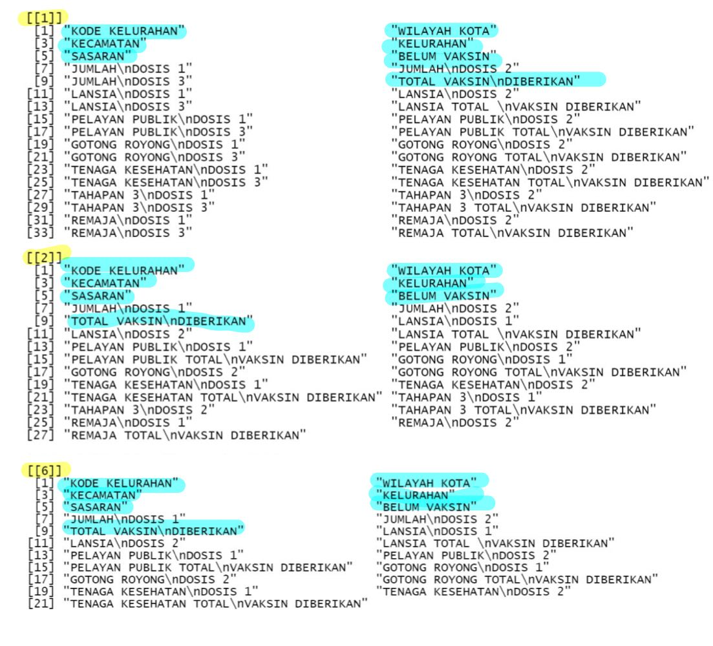
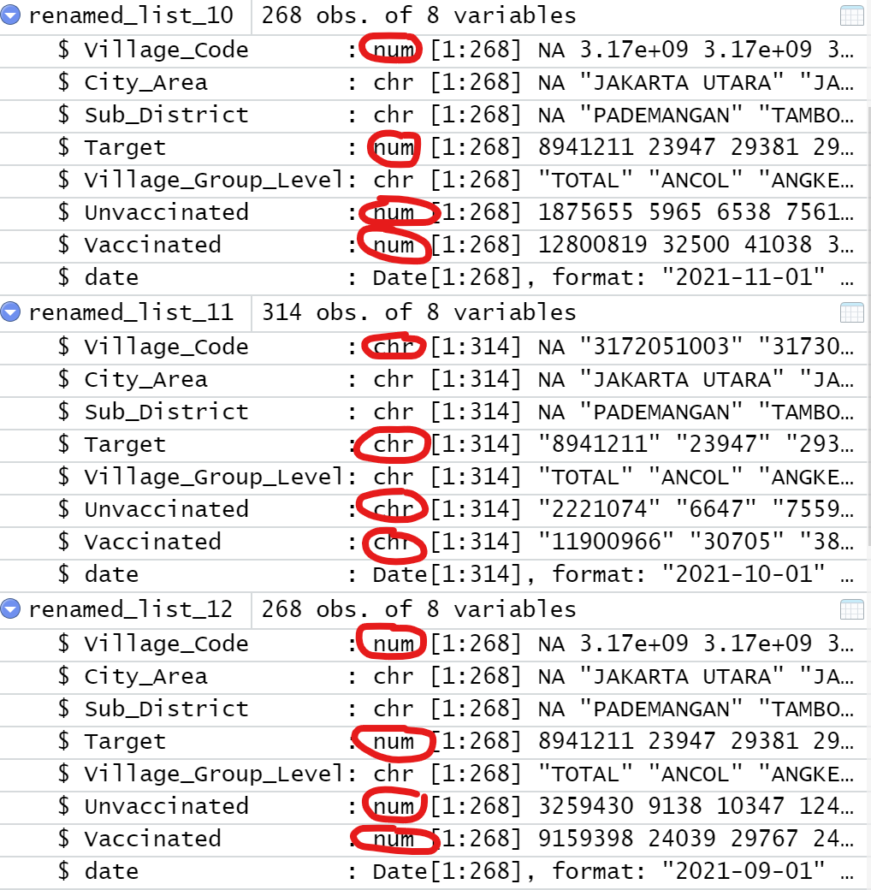
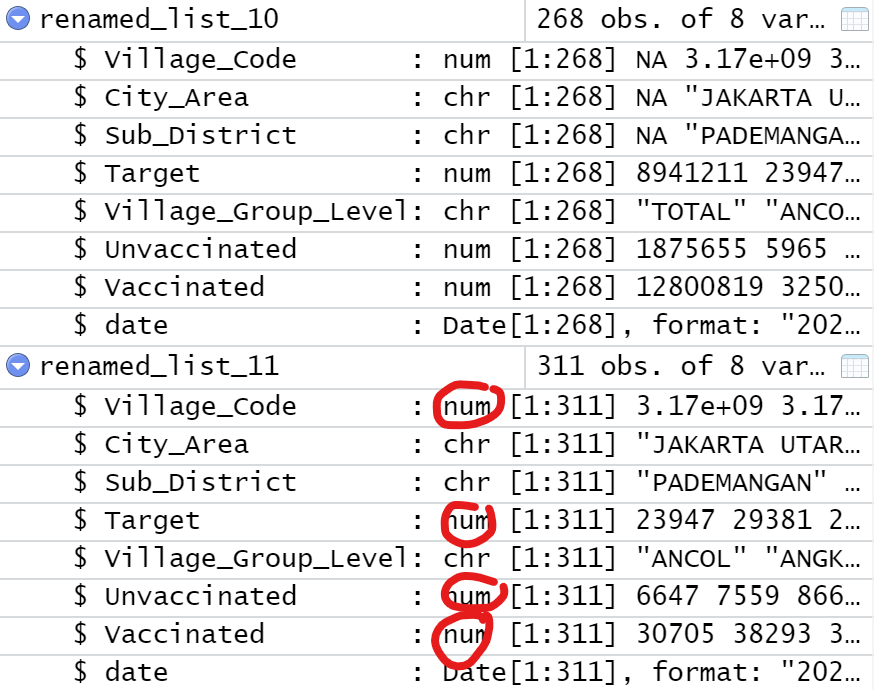
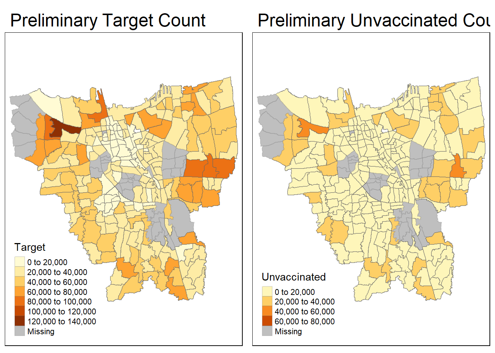
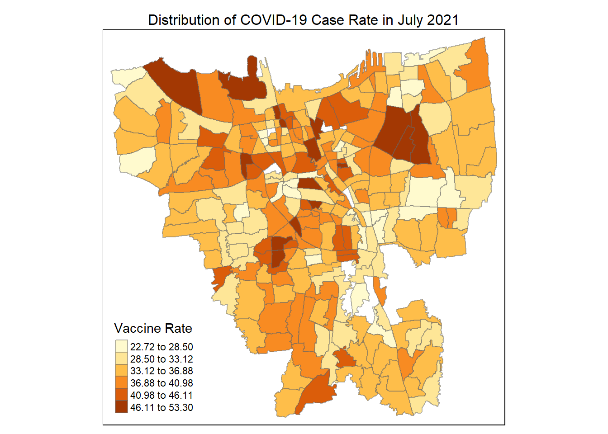
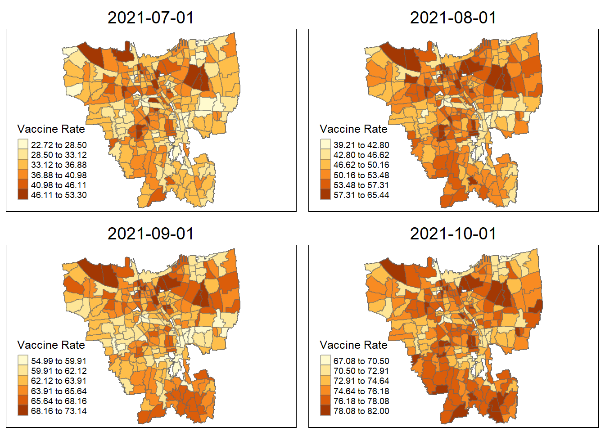

#explain the packages - what are their purposes
pacman::p_load(sf, tmap,tidyverse, sfdep, plotly, zoo)Take-Home Exercise 2: Spatio-temporal Analysis of COVID-19 Vaccination Trends at the Sub-district level, DKI Jakarta
1. Overview
Since late December 2019, an outbreak of a novel coronavirus disease (COVID-19; previously known as 2019-nCoV) was reported in Wuhan, China, which had subsequently affected 210 countries worldwide. In general, COVID-19 is an acute resolved disease but it can also be deadly, with a 2% case fatality rate.
The COVID-19 vaccination in Indonesia is an ongoing mass immunisation in response to the COVID-19 pandemic in Indonesia. On 13 January 2021, the program commenced when President Joko Widodo was vaccinated at the presidential palace. In terms of total doses given, Indonesia ranks third in Asia and fifth in the world.

According to wikipedia, as of 5 February 2023 at 18:00 WIB (UTC+7), 204,266,655 people had received the first dose of the vaccine and 175,131,893 people had been fully vaccinated; 69,597,474 of them had been inoculated with the booster or the third dose, while 1,585,164 had received the fourth dose. Jakarta has the highest percentage of population fully vaccinated with 103.46%, followed by Bali and Special Region of Yogyakarta with 85.45% and 83.02% respectively.
1.1 Problem Statement & Objectives
Despite its compactness, the cumulative vaccination rate are not evenly distributed within DKI Jarkata. The question is where are the sub-districts with relatively higher number of vaccination rate and how they changed over time (July 2021 to June 2022).
Exploratory Spatial Data Analysis (ESDA) hold tremendous potential to address complex problems facing society. In this study, students are tasked to apply appropriate Local Indicators of Spatial Association (LISA) and Emerging Hot Spot Analysis (EHSA) to undercover the spatio-temporal trends of COVID-19 vaccination in DKI Jakarta.
2. Data Acquisition Source
Apstial data
For the purpose of this assignment, data from Riwayat File Vaksinasi DKI Jakarta will be used. Daily vaccination data are provides. You are only required to download either the first day of the month or last day of the month of the study period. I opted to download the first day of the month data during the period from July 2021 to June 2022.
Geospatial data
For the purpose of this study, DKI Jakarta administration boundary 2019 will be used. The data set can be downloaded at Indonesia Geospatial portal, specifically at this page.
Data summary table
| Type | Name | Format | Description |
|---|---|---|---|
| Geospatial | Shapefile (SHP) Batas Desa Provinsi DKI Jakarta | shapefile | Sub-districts in DKI Jarkarta |
| Aspatial | Data Vaksinasi Berbasis Kelurahan dan Kecamatan (Monthly) | .csv | Sub-district level data of COVID-19 cases in DKI Jarkata between July 2021 to June 2022 |
3. Getting started
3.1 Installing and Loading the R packages
The R packages installed that we will be using for analysis are:
sf: used for importing, managing, and processing geospatial data
tidyverse: a collection of packages for data science tasks
tmap: used for creating thematic maps, such as choropleth and bubble maps
sfdep:
plotly: used for creating interactive and dynamic visualisations in R
zoo: A popular package for working with time series data
4. Data Wrangling: Geospatial Data & Aspatial Data
4.1 Importing Geospatial Data
bd_jakarta <- st_read(dsn="data/geospatial",
layer="BATAS_DESA_DESEMBER_2019_DUKCAPIL_DKI_JAKARTA")Reading layer `BATAS_DESA_DESEMBER_2019_DUKCAPIL_DKI_JAKARTA' from data source
`C:\G2wongkelly\IS415_GAA\Take_Home_Ex\Take_Home_Ex02\data\geospatial'
using driver `ESRI Shapefile'
Simple feature collection with 269 features and 161 fields
Geometry type: MULTIPOLYGON
Dimension: XY
Bounding box: xmin: 106.3831 ymin: -6.370815 xmax: 106.9728 ymax: -5.184322
Geodetic CRS: WGS 84From the output message, we learn that:
Geometry type is multipolygon
269 features and 161 fields
Assigned CRS is WGS 84 (geographic coordinate system)
Dimension is XY
4.1.1 Geospatial Data Pre-Processing (Cleaning)
Similar to our take-home assignment 1, before we can visualise our datasets and do the necessary analysis, we have to do data cleaning which is an important step in any data science task including geospatial data science. Things to check:
Invalid geometries
Missing value
(1) Invalid geometries
length(which(st_is_valid(bd_jakarta) == FALSE))[1] 0(2) Missing value
bd_jakarta[rowSums(is.na(bd_jakarta))!=0,]Simple feature collection with 2 features and 161 fields
Geometry type: MULTIPOLYGON
Dimension: XY
Bounding box: xmin: 106.8412 ymin: -6.154036 xmax: 106.8612 ymax: -6.144973
Geodetic CRS: WGS 84
OBJECT_ID KODE_DESA DESA KODE PROVINSI KAB_KOTA KECAMATAN
243 25645 31888888 DANAU SUNTER 318888 DKI JAKARTA <NA> <NA>
244 25646 31888888 DANAU SUNTER DLL 318888 DKI JAKARTA <NA> <NA>
DESA_KELUR JUMLAH_PEN JUMLAH_KK LUAS_WILAY KEPADATAN PERPINDAHA JUMLAH_MEN
243 <NA> 0 0 0 0 0 0
244 <NA> 0 0 0 0 0 0
PERUBAHAN WAJIB_KTP SILAM KRISTEN KHATOLIK HINDU BUDHA KONGHUCU KEPERCAYAA
243 0 0 0 0 0 0 0 0 0
244 0 0 0 0 0 0 0 0 0
PRIA WANITA BELUM_KAWI KAWIN CERAI_HIDU CERAI_MATI U0 U5 U10 U15 U20 U25
243 0 0 0 0 0 0 0 0 0 0 0 0
244 0 0 0 0 0 0 0 0 0 0 0 0
U30 U35 U40 U45 U50 U55 U60 U65 U70 U75 TIDAK_BELU BELUM_TAMA TAMAT_SD SLTP
243 0 0 0 0 0 0 0 0 0 0 0 0 0 0
244 0 0 0 0 0 0 0 0 0 0 0 0 0 0
SLTA DIPLOMA_I DIPLOMA_II DIPLOMA_IV STRATA_II STRATA_III BELUM_TIDA
243 0 0 0 0 0 0 0
244 0 0 0 0 0 0 0
APARATUR_P TENAGA_PEN WIRASWASTA PERTANIAN NELAYAN AGAMA_DAN PELAJAR_MA
243 0 0 0 0 0 0 0
244 0 0 0 0 0 0 0
TENAGA_KES PENSIUNAN LAINNYA GENERATED KODE_DES_1 BELUM_ MENGUR_ PELAJAR_
243 0 0 0 <NA> <NA> 0 0 0
244 0 0 0 <NA> <NA> 0 0 0
PENSIUNA_1 PEGAWAI_ TENTARA KEPOLISIAN PERDAG_ PETANI PETERN_ NELAYAN_1
243 0 0 0 0 0 0 0 0
244 0 0 0 0 0 0 0 0
INDUSTR_ KONSTR_ TRANSP_ KARYAW_ KARYAW1 KARYAW1_1 KARYAW1_12 BURUH BURUH_
243 0 0 0 0 0 0 0 0 0
244 0 0 0 0 0 0 0 0 0
BURUH1 BURUH1_1 PEMBANT_ TUKANG TUKANG_1 TUKANG_12 TUKANG__13 TUKANG__14
243 0 0 0 0 0 0 0 0
244 0 0 0 0 0 0 0 0
TUKANG__15 TUKANG__16 TUKANG__17 PENATA PENATA_ PENATA1_1 MEKANIK SENIMAN_
243 0 0 0 0 0 0 0 0
244 0 0 0 0 0 0 0 0
TABIB PARAJI_ PERANCA_ PENTER_ IMAM_M PENDETA PASTOR WARTAWAN USTADZ JURU_M
243 0 0 0 0 0 0 0 0 0 0
244 0 0 0 0 0 0 0 0 0 0
PROMOT ANGGOTA_ ANGGOTA1 ANGGOTA1_1 PRESIDEN WAKIL_PRES ANGGOTA1_2
243 0 0 0 0 0 0 0
244 0 0 0 0 0 0 0
ANGGOTA1_3 DUTA_B GUBERNUR WAKIL_GUBE BUPATI WAKIL_BUPA WALIKOTA WAKIL_WALI
243 0 0 0 0 0 0 0 0
244 0 0 0 0 0 0 0 0
ANGGOTA1_4 ANGGOTA1_5 DOSEN GURU PILOT PENGACARA_ NOTARIS ARSITEK AKUNTA_
243 0 0 0 0 0 0 0 0 0
244 0 0 0 0 0 0 0 0 0
KONSUL_ DOKTER BIDAN PERAWAT APOTEK_ PSIKIATER PENYIA_ PENYIA1 PELAUT
243 0 0 0 0 0 0 0 0 0
244 0 0 0 0 0 0 0 0 0
PENELITI SOPIR PIALAN PARANORMAL PEDAGA_ PERANG_ KEPALA_ BIARAW_ WIRASWAST_
243 0 0 0 0 0 0 0 0 0
244 0 0 0 0 0 0 0 0 0
LAINNYA_12 LUAS_DESA KODE_DES_3 DESA_KEL_1 KODE_12
243 0 0 <NA> <NA> 0
244 0 0 <NA> <NA> 0
geometry
243 MULTIPOLYGON (((106.8612 -6...
244 MULTIPOLYGON (((106.8504 -6...From the output generated above, we can tell that there are two particulars rows with missing values for KAB_KOTA (City), KECAMATAN (District), and DESA_KELUR (Village), as well as other fields such as OBJECT_ID 25645 and 25646. Therefore, we will need to remove them from the data.
#removes rows that have an NA value in DESA_KELUR
bd_jakarta <- na.omit(bd_jakarta,c("DESA_KELUR"))#re-run to check if there is anymore NA value
bd_jakarta[rowSums(is.na(bd_jakarta))!=0,]Simple feature collection with 0 features and 161 fields
Bounding box: xmin: NA ymin: NA xmax: NA ymax: NA
Geodetic CRS: WGS 84
[1] OBJECT_ID KODE_DESA DESA KODE PROVINSI KAB_KOTA
[7] KECAMATAN DESA_KELUR JUMLAH_PEN JUMLAH_KK LUAS_WILAY KEPADATAN
[13] PERPINDAHA JUMLAH_MEN PERUBAHAN WAJIB_KTP SILAM KRISTEN
[19] KHATOLIK HINDU BUDHA KONGHUCU KEPERCAYAA PRIA
[25] WANITA BELUM_KAWI KAWIN CERAI_HIDU CERAI_MATI U0
[31] U5 U10 U15 U20 U25 U30
[37] U35 U40 U45 U50 U55 U60
[43] U65 U70 U75 TIDAK_BELU BELUM_TAMA TAMAT_SD
[49] SLTP SLTA DIPLOMA_I DIPLOMA_II DIPLOMA_IV STRATA_II
[55] STRATA_III BELUM_TIDA APARATUR_P TENAGA_PEN WIRASWASTA PERTANIAN
[61] NELAYAN AGAMA_DAN PELAJAR_MA TENAGA_KES PENSIUNAN LAINNYA
[67] GENERATED KODE_DES_1 BELUM_ MENGUR_ PELAJAR_ PENSIUNA_1
[73] PEGAWAI_ TENTARA KEPOLISIAN PERDAG_ PETANI PETERN_
[79] NELAYAN_1 INDUSTR_ KONSTR_ TRANSP_ KARYAW_ KARYAW1
[85] KARYAW1_1 KARYAW1_12 BURUH BURUH_ BURUH1 BURUH1_1
[91] PEMBANT_ TUKANG TUKANG_1 TUKANG_12 TUKANG__13 TUKANG__14
[97] TUKANG__15 TUKANG__16 TUKANG__17 PENATA PENATA_ PENATA1_1
[103] MEKANIK SENIMAN_ TABIB PARAJI_ PERANCA_ PENTER_
[109] IMAM_M PENDETA PASTOR WARTAWAN USTADZ JURU_M
[115] PROMOT ANGGOTA_ ANGGOTA1 ANGGOTA1_1 PRESIDEN WAKIL_PRES
[121] ANGGOTA1_2 ANGGOTA1_3 DUTA_B GUBERNUR WAKIL_GUBE BUPATI
[127] WAKIL_BUPA WALIKOTA WAKIL_WALI ANGGOTA1_4 ANGGOTA1_5 DOSEN
[133] GURU PILOT PENGACARA_ NOTARIS ARSITEK AKUNTA_
[139] KONSUL_ DOKTER BIDAN PERAWAT APOTEK_ PSIKIATER
[145] PENYIA_ PENYIA1 PELAUT PENELITI SOPIR PIALAN
[151] PARANORMAL PEDAGA_ PERANG_ KEPALA_ BIARAW_ WIRASWAST_
[157] LAINNYA_12 LUAS_DESA KODE_DES_3 DESA_KEL_1 KODE_12 geometry
<0 rows> (or 0-length row.names)Great! The data now is cleaned with no missing values! :)
4.1.2 Verifying & Data Transformation
#retrieves the coordinate system of bd_jakarta
st_crs(bd_jakarta)Coordinate Reference System:
User input: WGS 84
wkt:
GEOGCRS["WGS 84",
DATUM["World Geodetic System 1984",
ELLIPSOID["WGS 84",6378137,298.257223563,
LENGTHUNIT["metre",1]]],
PRIMEM["Greenwich",0,
ANGLEUNIT["degree",0.0174532925199433]],
CS[ellipsoidal,2],
AXIS["latitude",north,
ORDER[1],
ANGLEUNIT["degree",0.0174532925199433]],
AXIS["longitude",east,
ORDER[2],
ANGLEUNIT["degree",0.0174532925199433]],
ID["EPSG",4326]]According to the output message above, we learn that the current assigned coordinate system is WGS 84, the “World Geodetic System 1984”. However, in the context of this data set, it is an Indonesian-specific geospatial data set. Therefore, we should be using the national CRS of Indonesia, DGN95, the “Datum Geodesi Nasional 1995”, ESPG code 23845. Let’s rectify that:
#transform WGS84 to DGN95, ESPG code 23845
bd_jakarta <- st_transform(bd_jakarta, 23845)
st_crs(bd_jakarta)Coordinate Reference System:
User input: EPSG:23845
wkt:
PROJCRS["DGN95 / Indonesia TM-3 zone 54.1",
BASEGEOGCRS["DGN95",
DATUM["Datum Geodesi Nasional 1995",
ELLIPSOID["WGS 84",6378137,298.257223563,
LENGTHUNIT["metre",1]]],
PRIMEM["Greenwich",0,
ANGLEUNIT["degree",0.0174532925199433]],
ID["EPSG",4755]],
CONVERSION["Indonesia TM-3 zone 54.1",
METHOD["Transverse Mercator",
ID["EPSG",9807]],
PARAMETER["Latitude of natural origin",0,
ANGLEUNIT["degree",0.0174532925199433],
ID["EPSG",8801]],
PARAMETER["Longitude of natural origin",139.5,
ANGLEUNIT["degree",0.0174532925199433],
ID["EPSG",8802]],
PARAMETER["Scale factor at natural origin",0.9999,
SCALEUNIT["unity",1],
ID["EPSG",8805]],
PARAMETER["False easting",200000,
LENGTHUNIT["metre",1],
ID["EPSG",8806]],
PARAMETER["False northing",1500000,
LENGTHUNIT["metre",1],
ID["EPSG",8807]]],
CS[Cartesian,2],
AXIS["easting (X)",east,
ORDER[1],
LENGTHUNIT["metre",1]],
AXIS["northing (Y)",north,
ORDER[2],
LENGTHUNIT["metre",1]],
USAGE[
SCOPE["Cadastre."],
AREA["Indonesia - onshore east of 138°E."],
BBOX[-9.19,138,-1.49,141.01]],
ID["EPSG",23845]]From the above output message, we can tell that the original coordinate system (WGS 84) has been successfully transformed to Indonesia coordinate system (DGN 95).
Now, let’s plot the geometry to quickly visualise the data.
4.1.3 Verifying & Removing Outer Islands
plot(st_geometry(bd_jakarta))
As we can see, bd_jakarta includes both the mainland and the outer islands. However, in the context of this assignment, we are not interested in the outer islands. Therefore, we can eliminate them out.
We will first output the unique values of PROVINSE (province) and KAB_KOTA (city) fields to inspect the distribution of clusters.
# outputs unique values of province and city fields
unique(bd_jakarta$"PROVINSI")[1] "DKI JAKARTA"unique(bd_jakarta$"KAB_KOTA")[1] "JAKARTA BARAT" "JAKARTA PUSAT" "KEPULAUAN SERIBU" "JAKARTA UTARA"
[5] "JAKARTA TIMUR" "JAKARTA SELATAN" Noticed from the output message above, the province are the same for all rows. However, as for KAB_KOTA, cities of Jakarta, realised that most of the cities have a JAKARTA prefix except for KEPULAUAN SERIBU (translated to ‘Thousand Islands’) refers to the outer islands. Just to check, we will plot the geometry of the geospatial data set once again with cluster of colours.
tm_shape(bd_jakarta) +
tm_polygons("KAB_KOTA")
Now we can clearly identify the outer islands and they are the “orange” mini clusters spreading outside the main islands. We will then remove them from our data set:
bd_jakarta <- filter(bd_jakarta , KAB_KOTA != "KEPULAUAN SERIBU")Let us check if they are removed by plotting the map again!
tm_shape(bd_jakarta) +
tm_polygons("KAB_KOTA")
Yes! we have successfully excluded the outer islands from the map and left us with only the mainland which are the cities that start with the “JAKARTA” prefix.
4.1.4 Retaining relevant columns & Renaming them with translation (English)
There are too many columns in the date file bd_jakarta and we will need to only retain the fields that are relevant to our analysis which are the first 9 fields in the bd_jakarta data frame.
# Retain only the first 9 fields of bd_jakarta
bd_jakarta <- bd_jakarta[, 0:9]Next, we need to also rename the retained columns to English language for ease of understanding for analysis later.
bd_jakarta <- bd_jakarta %>%
dplyr::rename(
Object_ID=OBJECT_ID,
Province=PROVINSI,
City=KAB_KOTA,
District=KECAMATAN,
Village_Code=KODE_DESA,
Village=DESA,
Sub_District=DESA_KELUR,
Code=KODE,
Total_Population=JUMLAH_PEN
)We are done with our Geospatial data processing and now let’s move on the Aspatial data!
4.2 Importing Aspatial Data
In our “data/aspatial” folder, we have multiple sub-district level data of COVID-19 cases in DKI Jarkata between July 2021 to June 2022. Therefore, we would want to find a more efficient way to import all of them instead of one by one.
In the code chunk below, we first use list.files() function to get a list of all CSV files in the directory data/aspatial/. Then, we use the lapply() function to read each file in the list using read_csv() and store the resulting data frames in a list named data_list. Finally, we use do.call() function to combine all the data frames in the list into one large data frame named result_file.
csv_files <- list.files(path = "data/aspatial/", pattern = "*.csv")
# read all CSV files into a list of data frames
data_list <- lapply(csv_files, function(file) {
read_csv(paste("data/aspatial/", file, sep = ""))
})4.2.1 Data Pre-Processing (Cleaning)
#Take a quick glance of all the data sets in the list of imported aspatial files
data_list[[1]]
# A tibble: 268 × 34
KODE KELURA…¹ WILAY…² KECAM…³ KELUR…⁴ SASARAN BELUM…⁵ JUMLA…⁶ JUMLA…⁷ JUMLA…⁸
<dbl> <chr> <chr> <chr> <dbl> <dbl> <dbl> <dbl> <dbl>
1 NA <NA> <NA> TOTAL 8941211 1481006 7460205 6684941 1886300
2 3172051003 JAKART… PADEMA… ANCOL 23947 4518 19429 16915 4266
3 3173041007 JAKART… TAMBORA ANGKE 29381 5181 24200 21004 6227
4 3175041005 JAKART… KRAMAT… BALE K… 29074 5774 23300 20129 4237
5 3175031003 JAKART… JATINE… BALI M… 9752 1620 8132 7334 2202
6 3175101006 JAKART… CIPAYU… BAMBU … 26285 3941 22344 20353 5381
7 3174031002 JAKART… MAMPAN… BANGKA 21566 3889 17677 15884 3936
8 3175051002 JAKART… PASAR … BARU 23886 3214 20672 18991 7056
9 3175041004 JAKART… KRAMAT… BATU A… 47898 9150 38748 33966 8249
10 3171071002 JAKART… TANAH … BENDUN… 21494 3692 17802 16229 5626
# … with 258 more rows, 25 more variables: `TOTAL VAKSIN\nDIBERIKAN` <dbl>,
# `LANSIA\nDOSIS 1` <dbl>, `LANSIA\nDOSIS 2` <dbl>, `LANSIA\nDOSIS 3` <dbl>,
# `LANSIA TOTAL \nVAKSIN DIBERIKAN` <dbl>, `PELAYAN PUBLIK\nDOSIS 1` <dbl>,
# `PELAYAN PUBLIK\nDOSIS 2` <dbl>, `PELAYAN PUBLIK\nDOSIS 3` <dbl>,
# `PELAYAN PUBLIK TOTAL\nVAKSIN DIBERIKAN` <dbl>,
# `GOTONG ROYONG\nDOSIS 1` <dbl>, `GOTONG ROYONG\nDOSIS 2` <dbl>,
# `GOTONG ROYONG\nDOSIS 3` <dbl>, …
[[2]]
# A tibble: 268 × 27
KODE KELURA…¹ WILAY…² KECAM…³ KELUR…⁴ SASARAN BELUM…⁵ JUMLA…⁶ JUMLA…⁷ TOTAL…⁸
<dbl> <chr> <chr> <chr> <dbl> <dbl> <dbl> <dbl> <dbl>
1 NA <NA> <NA> TOTAL 8941211 4399496 4541715 1686820 6228535
2 3172051003 JAKART… PADEMA… ANCOL 23947 12155 11792 4268 16060
3 3173041007 JAKART… TAMBORA ANGKE 29381 13727 15654 4905 20559
4 3175041005 JAKART… KRAMAT… BALE K… 29074 18226 10848 3712 14560
5 3175031003 JAKART… JATINE… BALI M… 9752 4987 4765 2036 6801
6 3175101006 JAKART… CIPAYU… BAMBU … 26285 13716 12569 5242 17811
7 3174031002 JAKART… MAMPAN… BANGKA 21566 10232 11334 4089 15423
8 3175051002 JAKART… PASAR … BARU 23886 9999 13887 6150 20037
9 3175041004 JAKART… KRAMAT… BATU A… 47898 28381 19517 7375 26892
10 3171071002 JAKART… TANAH … BENDUN… 21494 9895 11599 4662 16261
# … with 258 more rows, 18 more variables: `LANSIA\nDOSIS 1` <dbl>,
# `LANSIA\nDOSIS 2` <dbl>, `LANSIA TOTAL \nVAKSIN DIBERIKAN` <dbl>,
# `PELAYAN PUBLIK\nDOSIS 1` <dbl>, `PELAYAN PUBLIK\nDOSIS 2` <dbl>,
# `PELAYAN PUBLIK TOTAL\nVAKSIN DIBERIKAN` <dbl>,
# `GOTONG ROYONG\nDOSIS 1` <dbl>, `GOTONG ROYONG\nDOSIS 2` <dbl>,
# `GOTONG ROYONG TOTAL\nVAKSIN DIBERIKAN` <dbl>,
# `TENAGA KESEHATAN\nDOSIS 1` <dbl>, `TENAGA KESEHATAN\nDOSIS 2` <dbl>, …
[[3]]
# A tibble: 268 × 27
KODE KELURA…¹ WILAY…² KECAM…³ KELUR…⁴ SASARAN BELUM…⁵ JUMLA…⁶ JUMLA…⁷ TOTAL…⁸
<dbl> <chr> <chr> <chr> <dbl> <dbl> <dbl> <dbl> <dbl>
1 NA <NA> <NA> TOTAL 8941211 1718787 7222424 6185453 1.34e7
2 3172051003 JAKART… PADEMA… ANCOL 23947 5514 18433 15487 3.39e4
3 3173041007 JAKART… TAMBORA ANGKE 29381 5968 23413 19433 4.28e4
4 3175041005 JAKART… KRAMAT… BALE K… 29074 6779 22295 18123 4.04e4
5 3175031003 JAKART… JATINE… BALI M… 9752 1916 7836 6780 1.46e4
6 3175101006 JAKART… CIPAYU… BAMBU … 26285 4596 21689 18730 4.04e4
7 3174031002 JAKART… MAMPAN… BANGKA 21566 4339 17227 14724 3.20e4
8 3175051002 JAKART… PASAR … BARU 23886 3769 20117 17822 3.79e4
9 3175041004 JAKART… KRAMAT… BATU A… 47898 10965 36933 30729 6.77e4
10 3171071002 JAKART… TANAH … BENDUN… 21494 4174 17320 15147 3.25e4
# … with 258 more rows, 18 more variables: `LANSIA\nDOSIS 1` <dbl>,
# `LANSIA\nDOSIS 2` <dbl>, `LANSIA TOTAL \nVAKSIN DIBERIKAN` <dbl>,
# `PELAYAN PUBLIK\nDOSIS 1` <dbl>, `PELAYAN PUBLIK\nDOSIS 2` <dbl>,
# `PELAYAN PUBLIK TOTAL\nVAKSIN DIBERIKAN` <dbl>,
# `GOTONG ROYONG\nDOSIS 1` <dbl>, `GOTONG ROYONG\nDOSIS 2` <dbl>,
# `GOTONG ROYONG TOTAL\nVAKSIN DIBERIKAN` <dbl>,
# `TENAGA KESEHATAN\nDOSIS 1` <dbl>, `TENAGA KESEHATAN\nDOSIS 2` <dbl>, …
[[4]]
# A tibble: 268 × 27
KODE KELURA…¹ WILAY…² KECAM…³ KELUR…⁴ SASARAN BELUM…⁵ JUMLA…⁶ JUMLA…⁷ TOTAL…⁸
<dbl> <chr> <chr> <chr> <dbl> <dbl> <dbl> <dbl> <dbl>
1 NA <NA> <NA> TOTAL 8941211 1536737 7404474 6521332 1.39e7
2 3172051003 JAKART… PADEMA… ANCOL 23947 4640 19307 16501 3.58e4
3 3173041007 JAKART… TAMBORA ANGKE 29381 5385 23996 20474 4.45e4
4 3175041005 JAKART… KRAMAT… BALE K… 29074 5958 23116 19476 4.26e4
5 3175031003 JAKART… JATINE… BALI M… 9752 1674 8078 7179 1.53e4
6 3175101006 JAKART… CIPAYU… BAMBU … 26285 4075 22210 19982 4.22e4
7 3174031002 JAKART… MAMPAN… BANGKA 21566 3989 17577 15535 3.31e4
8 3175051002 JAKART… PASAR … BARU 23886 3392 20494 18590 3.91e4
9 3175041004 JAKART… KRAMAT… BATU A… 47898 9505 38393 33001 7.14e4
10 3171071002 JAKART… TANAH … BENDUN… 21494 3811 17683 15879 3.36e4
# … with 258 more rows, 18 more variables: `LANSIA\nDOSIS 1` <dbl>,
# `LANSIA\nDOSIS 2` <dbl>, `LANSIA TOTAL \nVAKSIN DIBERIKAN` <dbl>,
# `PELAYAN PUBLIK\nDOSIS 1` <dbl>, `PELAYAN PUBLIK\nDOSIS 2` <dbl>,
# `PELAYAN PUBLIK TOTAL\nVAKSIN DIBERIKAN` <dbl>,
# `GOTONG ROYONG\nDOSIS 1` <dbl>, `GOTONG ROYONG\nDOSIS 2` <dbl>,
# `GOTONG ROYONG TOTAL\nVAKSIN DIBERIKAN` <dbl>,
# `TENAGA KESEHATAN\nDOSIS 1` <dbl>, `TENAGA KESEHATAN\nDOSIS 2` <dbl>, …
[[5]]
# A tibble: 268 × 27
KODE KELURA…¹ WILAY…² KECAM…³ KELUR…⁴ SASARAN BELUM…⁵ JUMLA…⁶ JUMLA…⁷ TOTAL…⁸
<dbl> <chr> <chr> <chr> <dbl> <dbl> <dbl> <dbl> <dbl>
1 NA <NA> <NA> TOTAL 8941211 1620250 7320961 6375344 1.37e7
2 3172051003 JAKART… PADEMA… ANCOL 23947 5049 18898 16011 3.49e4
3 3173041007 JAKART… TAMBORA ANGKE 29381 5616 23765 20035 4.38e4
4 3175041005 JAKART… KRAMAT… BALE K… 29074 6320 22754 18951 4.17e4
5 3175031003 JAKART… JATINE… BALI M… 9752 1780 7972 7009 1.50e4
6 3175101006 JAKART… CIPAYU… BAMBU … 26285 4368 21917 19414 4.13e4
7 3174031002 JAKART… MAMPAN… BANGKA 21566 4167 17399 15151 3.26e4
8 3175051002 JAKART… PASAR … BARU 23886 3576 20310 18249 3.86e4
9 3175041004 JAKART… KRAMAT… BATU A… 47898 10137 37761 32059 6.98e4
10 3171071002 JAKART… TANAH … BENDUN… 21494 3989 17505 15548 3.31e4
# … with 258 more rows, 18 more variables: `LANSIA\nDOSIS 1` <dbl>,
# `LANSIA\nDOSIS 2` <dbl>, `LANSIA TOTAL \nVAKSIN DIBERIKAN` <dbl>,
# `PELAYAN PUBLIK\nDOSIS 1` <dbl>, `PELAYAN PUBLIK\nDOSIS 2` <dbl>,
# `PELAYAN PUBLIK TOTAL\nVAKSIN DIBERIKAN` <dbl>,
# `GOTONG ROYONG\nDOSIS 1` <dbl>, `GOTONG ROYONG\nDOSIS 2` <dbl>,
# `GOTONG ROYONG TOTAL\nVAKSIN DIBERIKAN` <dbl>,
# `TENAGA KESEHATAN\nDOSIS 1` <dbl>, `TENAGA KESEHATAN\nDOSIS 2` <dbl>, …
[[6]]
# A tibble: 268 × 21
KODE KELURA…¹ WILAY…² KECAM…³ KELUR…⁴ SASARAN BELUM…⁵ JUMLA…⁶ JUMLA…⁷ TOTAL…⁸
<dbl> <chr> <chr> <chr> <dbl> <dbl> <dbl> <dbl> <dbl>
1 NA <NA> <NA> TOTAL 7739060 5041111 2696017 1181740 3877757
2 3172051003 JAKART… PADEMA… ANCOL 20393 13272 7114 3287 10401
3 3173041007 JAKART… TAMBORA ANGKE 25785 16477 9299 3221 12520
4 3175041005 JAKART… KRAMAT… BALE K… 25158 18849 6301 2644 8945
5 3175031003 JAKART… JATINE… BALI M… 8683 5743 2937 1517 4454
6 3175101006 JAKART… CIPAYU… BAMBU … 22768 15407 7357 3985 11342
7 3174031002 JAKART… MAMPAN… BANGKA 18930 12503 6421 2704 9125
8 3175051002 JAKART… PASAR … BARU 20267 11268 8982 4674 13656
9 3175041004 JAKART… KRAMAT… BATU A… 41389 30358 11020 5254 16274
10 3171071002 JAKART… TANAH … BENDUN… 19008 11502 7499 3566 11065
# … with 258 more rows, 12 more variables: `LANSIA\nDOSIS 1` <dbl>,
# `LANSIA\nDOSIS 2` <dbl>, `LANSIA TOTAL \nVAKSIN DIBERIKAN` <dbl>,
# `PELAYAN PUBLIK\nDOSIS 1` <dbl>, `PELAYAN PUBLIK\nDOSIS 2` <dbl>,
# `PELAYAN PUBLIK TOTAL\nVAKSIN DIBERIKAN` <dbl>,
# `GOTONG ROYONG\nDOSIS 1` <dbl>, `GOTONG ROYONG\nDOSIS 2` <dbl>,
# `GOTONG ROYONG TOTAL\nVAKSIN DIBERIKAN` <dbl>,
# `TENAGA KESEHATAN\nDOSIS 1` <dbl>, `TENAGA KESEHATAN\nDOSIS 2` <dbl>, …
[[7]]
# A tibble: 268 × 34
KODE KELURA…¹ WILAY…² KECAM…³ KELUR…⁴ SASARAN BELUM…⁵ JUMLA…⁶ JUMLA…⁷ JUMLA…⁸
<dbl> <chr> <chr> <chr> <dbl> <dbl> <dbl> <dbl> <dbl>
1 NA <NA> <NA> TOTAL 8941211 1444901 7496310 6744379 2894577
2 3172051003 JAKART… PADEMA… ANCOL 23947 4440 19507 17077 7041
3 3173041007 JAKART… TAMBORA ANGKE 29381 5083 24298 21186 9520
4 3175041005 JAKART… KRAMAT… BALE K… 29074 5671 23403 20374 7055
5 3175031003 JAKART… JATINE… BALI M… 9752 1588 8164 7414 3428
6 3175101006 JAKART… CIPAYU… BAMBU … 26285 3824 22461 20532 8724
7 3174031002 JAKART… MAMPAN… BANGKA 21566 3803 17763 15995 5848
8 3175051002 JAKART… PASAR … BARU 23886 3146 20740 19139 9808
9 3175041004 JAKART… KRAMAT… BATU A… 47898 8984 38914 34345 13022
10 3171071002 JAKART… TANAH … BENDUN… 21494 3607 17887 16350 8118
# … with 258 more rows, 25 more variables: `TOTAL VAKSIN\nDIBERIKAN` <dbl>,
# `LANSIA\nDOSIS 1` <dbl>, `LANSIA\nDOSIS 2` <dbl>, `LANSIA\nDOSIS 3` <dbl>,
# `LANSIA TOTAL \nVAKSIN DIBERIKAN` <dbl>, `PELAYAN PUBLIK\nDOSIS 1` <dbl>,
# `PELAYAN PUBLIK\nDOSIS 2` <dbl>, `PELAYAN PUBLIK\nDOSIS 3` <dbl>,
# `PELAYAN PUBLIK TOTAL\nVAKSIN DIBERIKAN` <dbl>,
# `GOTONG ROYONG\nDOSIS 1` <dbl>, `GOTONG ROYONG\nDOSIS 2` <dbl>,
# `GOTONG ROYONG\nDOSIS 3` <dbl>, …
[[8]]
# A tibble: 268 × 27
KODE KELURA…¹ WILAY…² KECAM…³ KELUR…⁴ SASARAN BELUM…⁵ JUMLA…⁶ JUMLA…⁷ TOTAL…⁸
<dbl> <chr> <chr> <chr> <dbl> <dbl> <dbl> <dbl> <dbl>
1 NA <NA> <NA> TOTAL 8941211 1516200 7425011 6597093 1.40e7
2 3172051003 JAKART… PADEMA… ANCOL 23947 4590 19357 16698 3.61e4
3 3173041007 JAKART… TAMBORA ANGKE 29381 5315 24066 20748 4.48e4
4 3175041005 JAKART… KRAMAT… BALE K… 29074 5897 23177 19784 4.30e4
5 3175031003 JAKART… JATINE… BALI M… 9752 1649 8103 7250 1.54e4
6 3175101006 JAKART… CIPAYU… BAMBU … 26285 4029 22256 20167 4.24e4
7 3174031002 JAKART… MAMPAN… BANGKA 21566 3946 17620 15681 3.33e4
8 3175051002 JAKART… PASAR … BARU 23886 3341 20545 18766 3.93e4
9 3175041004 JAKART… KRAMAT… BATU A… 47898 9376 38522 33413 7.19e4
10 3171071002 JAKART… TANAH … BENDUN… 21494 3771 17723 16057 3.38e4
# … with 258 more rows, 18 more variables: `LANSIA\nDOSIS 1` <dbl>,
# `LANSIA\nDOSIS 2` <dbl>, `LANSIA TOTAL \nVAKSIN DIBERIKAN` <dbl>,
# `PELAYAN PUBLIK\nDOSIS 1` <dbl>, `PELAYAN PUBLIK\nDOSIS 2` <dbl>,
# `PELAYAN PUBLIK TOTAL\nVAKSIN DIBERIKAN` <dbl>,
# `GOTONG ROYONG\nDOSIS 1` <dbl>, `GOTONG ROYONG\nDOSIS 2` <dbl>,
# `GOTONG ROYONG TOTAL\nVAKSIN DIBERIKAN` <dbl>,
# `TENAGA KESEHATAN\nDOSIS 1` <dbl>, `TENAGA KESEHATAN\nDOSIS 2` <dbl>, …
[[9]]
# A tibble: 268 × 34
KODE KELURA…¹ WILAY…² KECAM…³ KELUR…⁴ SASARAN BELUM…⁵ JUMLA…⁶ JUMLA…⁷ JUMLA…⁸
<dbl> <chr> <chr> <chr> <dbl> <dbl> <dbl> <dbl> <dbl>
1 NA <NA> <NA> TOTAL 8941211 1455001 7486210 6728547 2723453
2 3172051003 JAKART… PADEMA… ANCOL 23947 4456 19491 17034 6578
3 3173041007 JAKART… TAMBORA ANGKE 29381 5106 24275 21139 8926
4 3175041005 JAKART… KRAMAT… BALE K… 29074 5707 23367 20319 6499
5 3175031003 JAKART… JATINE… BALI M… 9752 1599 8153 7396 3227
6 3175101006 JAKART… CIPAYU… BAMBU … 26285 3860 22425 20486 8176
7 3174031002 JAKART… MAMPAN… BANGKA 21566 3821 17745 15961 5495
8 3175051002 JAKART… PASAR … BARU 23886 3163 20723 19110 9341
9 3175041004 JAKART… KRAMAT… BATU A… 47898 9045 38853 34247 12119
10 3171071002 JAKART… TANAH … BENDUN… 21494 3634 17860 16312 7657
# … with 258 more rows, 25 more variables: `TOTAL VAKSIN\nDIBERIKAN` <dbl>,
# `LANSIA\nDOSIS 1` <dbl>, `LANSIA\nDOSIS 2` <dbl>, `LANSIA\nDOSIS 3` <dbl>,
# `LANSIA TOTAL \nVAKSIN DIBERIKAN` <dbl>, `PELAYAN PUBLIK\nDOSIS 1` <dbl>,
# `PELAYAN PUBLIK\nDOSIS 2` <dbl>, `PELAYAN PUBLIK\nDOSIS 3` <dbl>,
# `PELAYAN PUBLIK TOTAL\nVAKSIN DIBERIKAN` <dbl>,
# `GOTONG ROYONG\nDOSIS 1` <dbl>, `GOTONG ROYONG\nDOSIS 2` <dbl>,
# `GOTONG ROYONG\nDOSIS 3` <dbl>, …
[[10]]
# A tibble: 268 × 27
KODE KELURA…¹ WILAY…² KECAM…³ KELUR…⁴ SASARAN BELUM…⁵ JUMLA…⁶ JUMLA…⁷ TOTAL…⁸
<dbl> <chr> <chr> <chr> <dbl> <dbl> <dbl> <dbl> <dbl>
1 NA <NA> <NA> TOTAL 8941211 1875655 7065556 5735263 1.28e7
2 3172051003 JAKART… PADEMA… ANCOL 23947 5965 17982 14518 3.25e4
3 3173041007 JAKART… TAMBORA ANGKE 29381 6538 22843 18195 4.10e4
4 3175041005 JAKART… KRAMAT… BALE K… 29074 7561 21513 16465 3.80e4
5 3175031003 JAKART… JATINE… BALI M… 9752 2118 7634 6290 1.39e4
6 3175101006 JAKART… CIPAYU… BAMBU … 26285 5002 21283 17298 3.86e4
7 3174031002 JAKART… MAMPAN… BANGKA 21566 4732 16834 13587 3.04e4
8 3175051002 JAKART… PASAR … BARU 23886 4080 19806 16707 3.65e4
9 3175041004 JAKART… KRAMAT… BATU A… 47898 12177 35721 27978 6.37e4
10 3171071002 JAKART… TANAH … BENDUN… 21494 4486 17008 14194 3.12e4
# … with 258 more rows, 18 more variables: `LANSIA\nDOSIS 1` <dbl>,
# `LANSIA\nDOSIS 2` <dbl>, `LANSIA TOTAL \nVAKSIN DIBERIKAN` <dbl>,
# `PELAYAN PUBLIK\nDOSIS 1` <dbl>, `PELAYAN PUBLIK\nDOSIS 2` <dbl>,
# `PELAYAN PUBLIK TOTAL\nVAKSIN DIBERIKAN` <dbl>,
# `GOTONG ROYONG\nDOSIS 1` <dbl>, `GOTONG ROYONG\nDOSIS 2` <dbl>,
# `GOTONG ROYONG TOTAL\nVAKSIN DIBERIKAN` <dbl>,
# `TENAGA KESEHATAN\nDOSIS 1` <dbl>, `TENAGA KESEHATAN\nDOSIS 2` <dbl>, …
[[11]]
# A tibble: 314 × 27
KODE KELURA…¹ WILAY…² KECAM…³ KELUR…⁴ SASARAN BELUM…⁵ JUMLA…⁶ JUMLA…⁷ TOTAL…⁸
<chr> <chr> <chr> <chr> <chr> <chr> <chr> <chr> <chr>
1 <NA> <NA> <NA> TOTAL 8941211 2221074 6720137 5180829 119009…
2 3172051003 JAKART… PADEMA… ANCOL 23947 6647 17300 13405 30705
3 3173041007 JAKART… TAMBORA ANGKE 29381 7559 21822 16471 38293
4 3175041005 JAKART… KRAMAT… BALE K… 29074 8660 20414 14425 34839
5 3175031003 JAKART… JATINE… BALI M… 9752 2496 7256 5665 12921
6 3175101006 JAKART… CIPAYU… BAMBU … 26285 6055 20230 15400 35630
7 3174031002 JAKART… MAMPAN… BANGKA 21566 5745 15821 12175 27996
8 3175051002 JAKART… PASAR … BARU 23886 4873 19013 15558 34571
9 3175041004 JAKART… KRAMAT… BATU A… 47898 14035 33863 24757 58620
10 3171071002 JAKART… TANAH … BENDUN… 21494 5209 16285 12784 29069
# … with 304 more rows, 18 more variables: `LANSIA\nDOSIS 1` <chr>,
# `LANSIA\nDOSIS 2` <chr>, `LANSIA TOTAL \nVAKSIN DIBERIKAN` <chr>,
# `PELAYAN PUBLIK\nDOSIS 1` <chr>, `PELAYAN PUBLIK\nDOSIS 2` <chr>,
# `PELAYAN PUBLIK TOTAL\nVAKSIN DIBERIKAN` <chr>,
# `GOTONG ROYONG\nDOSIS 1` <chr>, `GOTONG ROYONG\nDOSIS 2` <chr>,
# `GOTONG ROYONG TOTAL\nVAKSIN DIBERIKAN` <chr>,
# `TENAGA KESEHATAN\nDOSIS 1` <chr>, `TENAGA KESEHATAN\nDOSIS 2` <chr>, …
[[12]]
# A tibble: 268 × 27
KODE KELURA…¹ WILAY…² KECAM…³ KELUR…⁴ SASARAN BELUM…⁵ JUMLA…⁶ JUMLA…⁷ TOTAL…⁸
<dbl> <chr> <chr> <chr> <dbl> <dbl> <dbl> <dbl> <dbl>
1 NA <NA> <NA> TOTAL 8941211 3259430 5681781 3477617 9159398
2 3172051003 JAKART… PADEMA… ANCOL 23947 9138 14809 9230 24039
3 3173041007 JAKART… TAMBORA ANGKE 29381 10347 19034 10733 29767
4 3175041005 JAKART… KRAMAT… BALE K… 29074 12455 16619 7968 24587
5 3175031003 JAKART… JATINE… BALI M… 9752 3689 6063 3777 9840
6 3175101006 JAKART… CIPAYU… BAMBU … 26285 9350 16935 10591 27526
7 3174031002 JAKART… MAMPAN… BANGKA 21566 8338 13228 8196 21424
8 3175051002 JAKART… PASAR … BARU 23886 7676 16210 11491 27701
9 3175041004 JAKART… KRAMAT… BATU A… 47898 19816 28082 15664 43746
10 3171071002 JAKART… TANAH … BENDUN… 21494 8012 13482 8777 22259
# … with 258 more rows, 18 more variables: `LANSIA\nDOSIS 1` <dbl>,
# `LANSIA\nDOSIS 2` <dbl>, `LANSIA TOTAL \nVAKSIN DIBERIKAN` <dbl>,
# `PELAYAN PUBLIK\nDOSIS 1` <dbl>, `PELAYAN PUBLIK\nDOSIS 2` <dbl>,
# `PELAYAN PUBLIK TOTAL\nVAKSIN DIBERIKAN` <dbl>,
# `GOTONG ROYONG\nDOSIS 1` <dbl>, `GOTONG ROYONG\nDOSIS 2` <dbl>,
# `GOTONG ROYONG TOTAL\nVAKSIN DIBERIKAN` <dbl>,
# `TENAGA KESEHATAN\nDOSIS 1` <dbl>, `TENAGA KESEHATAN\nDOSIS 2` <dbl>, …A total of 12 aspatial data files imported and among these data files, there are three variety of column number (34,27, and 21 variables).
Therefore, we will use the following code line to see the variety in columns for all the data sets.
#view column names in each data file
lapply(data_list, colnames)[[1]]
[1] "KODE KELURAHAN"
[2] "WILAYAH KOTA"
[3] "KECAMATAN"
[4] "KELURAHAN"
[5] "SASARAN"
[6] "BELUM VAKSIN"
[7] "JUMLAH\nDOSIS 1"
[8] "JUMLAH\nDOSIS 2"
[9] "JUMLAH\nDOSIS 3"
[10] "TOTAL VAKSIN\nDIBERIKAN"
[11] "LANSIA\nDOSIS 1"
[12] "LANSIA\nDOSIS 2"
[13] "LANSIA\nDOSIS 3"
[14] "LANSIA TOTAL \nVAKSIN DIBERIKAN"
[15] "PELAYAN PUBLIK\nDOSIS 1"
[16] "PELAYAN PUBLIK\nDOSIS 2"
[17] "PELAYAN PUBLIK\nDOSIS 3"
[18] "PELAYAN PUBLIK TOTAL\nVAKSIN DIBERIKAN"
[19] "GOTONG ROYONG\nDOSIS 1"
[20] "GOTONG ROYONG\nDOSIS 2"
[21] "GOTONG ROYONG\nDOSIS 3"
[22] "GOTONG ROYONG TOTAL\nVAKSIN DIBERIKAN"
[23] "TENAGA KESEHATAN\nDOSIS 1"
[24] "TENAGA KESEHATAN\nDOSIS 2"
[25] "TENAGA KESEHATAN\nDOSIS 3"
[26] "TENAGA KESEHATAN TOTAL\nVAKSIN DIBERIKAN"
[27] "TAHAPAN 3\nDOSIS 1"
[28] "TAHAPAN 3\nDOSIS 2"
[29] "TAHAPAN 3\nDOSIS 3"
[30] "TAHAPAN 3 TOTAL\nVAKSIN DIBERIKAN"
[31] "REMAJA\nDOSIS 1"
[32] "REMAJA\nDOSIS 2"
[33] "REMAJA\nDOSIS 3"
[34] "REMAJA TOTAL\nVAKSIN DIBERIKAN"
[[2]]
[1] "KODE KELURAHAN"
[2] "WILAYAH KOTA"
[3] "KECAMATAN"
[4] "KELURAHAN"
[5] "SASARAN"
[6] "BELUM VAKSIN"
[7] "JUMLAH\nDOSIS 1"
[8] "JUMLAH\nDOSIS 2"
[9] "TOTAL VAKSIN\nDIBERIKAN"
[10] "LANSIA\nDOSIS 1"
[11] "LANSIA\nDOSIS 2"
[12] "LANSIA TOTAL \nVAKSIN DIBERIKAN"
[13] "PELAYAN PUBLIK\nDOSIS 1"
[14] "PELAYAN PUBLIK\nDOSIS 2"
[15] "PELAYAN PUBLIK TOTAL\nVAKSIN DIBERIKAN"
[16] "GOTONG ROYONG\nDOSIS 1"
[17] "GOTONG ROYONG\nDOSIS 2"
[18] "GOTONG ROYONG TOTAL\nVAKSIN DIBERIKAN"
[19] "TENAGA KESEHATAN\nDOSIS 1"
[20] "TENAGA KESEHATAN\nDOSIS 2"
[21] "TENAGA KESEHATAN TOTAL\nVAKSIN DIBERIKAN"
[22] "TAHAPAN 3\nDOSIS 1"
[23] "TAHAPAN 3\nDOSIS 2"
[24] "TAHAPAN 3 TOTAL\nVAKSIN DIBERIKAN"
[25] "REMAJA\nDOSIS 1"
[26] "REMAJA\nDOSIS 2"
[27] "REMAJA TOTAL\nVAKSIN DIBERIKAN"
[[3]]
[1] "KODE KELURAHAN"
[2] "WILAYAH KOTA"
[3] "KECAMATAN"
[4] "KELURAHAN"
[5] "SASARAN"
[6] "BELUM VAKSIN"
[7] "JUMLAH\nDOSIS 1"
[8] "JUMLAH\nDOSIS 2"
[9] "TOTAL VAKSIN\nDIBERIKAN"
[10] "LANSIA\nDOSIS 1"
[11] "LANSIA\nDOSIS 2"
[12] "LANSIA TOTAL \nVAKSIN DIBERIKAN"
[13] "PELAYAN PUBLIK\nDOSIS 1"
[14] "PELAYAN PUBLIK\nDOSIS 2"
[15] "PELAYAN PUBLIK TOTAL\nVAKSIN DIBERIKAN"
[16] "GOTONG ROYONG\nDOSIS 1"
[17] "GOTONG ROYONG\nDOSIS 2"
[18] "GOTONG ROYONG TOTAL\nVAKSIN DIBERIKAN"
[19] "TENAGA KESEHATAN\nDOSIS 1"
[20] "TENAGA KESEHATAN\nDOSIS 2"
[21] "TENAGA KESEHATAN TOTAL\nVAKSIN DIBERIKAN"
[22] "TAHAPAN 3\nDOSIS 1"
[23] "TAHAPAN 3\nDOSIS 2"
[24] "TAHAPAN 3 TOTAL\nVAKSIN DIBERIKAN"
[25] "REMAJA\nDOSIS 1"
[26] "REMAJA\nDOSIS 2"
[27] "REMAJA TOTAL\nVAKSIN DIBERIKAN"
[[4]]
[1] "KODE KELURAHAN"
[2] "WILAYAH KOTA"
[3] "KECAMATAN"
[4] "KELURAHAN"
[5] "SASARAN"
[6] "BELUM VAKSIN"
[7] "JUMLAH\nDOSIS 1"
[8] "JUMLAH\nDOSIS 2"
[9] "TOTAL VAKSIN\nDIBERIKAN"
[10] "LANSIA\nDOSIS 1"
[11] "LANSIA\nDOSIS 2"
[12] "LANSIA TOTAL \nVAKSIN DIBERIKAN"
[13] "PELAYAN PUBLIK\nDOSIS 1"
[14] "PELAYAN PUBLIK\nDOSIS 2"
[15] "PELAYAN PUBLIK TOTAL\nVAKSIN DIBERIKAN"
[16] "GOTONG ROYONG\nDOSIS 1"
[17] "GOTONG ROYONG\nDOSIS 2"
[18] "GOTONG ROYONG TOTAL\nVAKSIN DIBERIKAN"
[19] "TENAGA KESEHATAN\nDOSIS 1"
[20] "TENAGA KESEHATAN\nDOSIS 2"
[21] "TENAGA KESEHATAN TOTAL\nVAKSIN DIBERIKAN"
[22] "TAHAPAN 3\nDOSIS 1"
[23] "TAHAPAN 3\nDOSIS 2"
[24] "TAHAPAN 3 TOTAL\nVAKSIN DIBERIKAN"
[25] "REMAJA\nDOSIS 1"
[26] "REMAJA\nDOSIS 2"
[27] "REMAJA TOTAL\nVAKSIN DIBERIKAN"
[[5]]
[1] "KODE KELURAHAN"
[2] "WILAYAH KOTA"
[3] "KECAMATAN"
[4] "KELURAHAN"
[5] "SASARAN"
[6] "BELUM VAKSIN"
[7] "JUMLAH\nDOSIS 1"
[8] "JUMLAH\nDOSIS 2"
[9] "TOTAL VAKSIN\nDIBERIKAN"
[10] "LANSIA\nDOSIS 1"
[11] "LANSIA\nDOSIS 2"
[12] "LANSIA TOTAL \nVAKSIN DIBERIKAN"
[13] "PELAYAN PUBLIK\nDOSIS 1"
[14] "PELAYAN PUBLIK\nDOSIS 2"
[15] "PELAYAN PUBLIK TOTAL\nVAKSIN DIBERIKAN"
[16] "GOTONG ROYONG\nDOSIS 1"
[17] "GOTONG ROYONG\nDOSIS 2"
[18] "GOTONG ROYONG TOTAL\nVAKSIN DIBERIKAN"
[19] "TENAGA KESEHATAN\nDOSIS 1"
[20] "TENAGA KESEHATAN\nDOSIS 2"
[21] "TENAGA KESEHATAN TOTAL\nVAKSIN DIBERIKAN"
[22] "TAHAPAN 3\nDOSIS 1"
[23] "TAHAPAN 3\nDOSIS 2"
[24] "TAHAPAN 3 TOTAL\nVAKSIN DIBERIKAN"
[25] "REMAJA\nDOSIS 1"
[26] "REMAJA\nDOSIS 2"
[27] "REMAJA TOTAL\nVAKSIN DIBERIKAN"
[[6]]
[1] "KODE KELURAHAN"
[2] "WILAYAH KOTA"
[3] "KECAMATAN"
[4] "KELURAHAN"
[5] "SASARAN"
[6] "BELUM VAKSIN"
[7] "JUMLAH\nDOSIS 1"
[8] "JUMLAH\nDOSIS 2"
[9] "TOTAL VAKSIN\nDIBERIKAN"
[10] "LANSIA\nDOSIS 1"
[11] "LANSIA\nDOSIS 2"
[12] "LANSIA TOTAL \nVAKSIN DIBERIKAN"
[13] "PELAYAN PUBLIK\nDOSIS 1"
[14] "PELAYAN PUBLIK\nDOSIS 2"
[15] "PELAYAN PUBLIK TOTAL\nVAKSIN DIBERIKAN"
[16] "GOTONG ROYONG\nDOSIS 1"
[17] "GOTONG ROYONG\nDOSIS 2"
[18] "GOTONG ROYONG TOTAL\nVAKSIN DIBERIKAN"
[19] "TENAGA KESEHATAN\nDOSIS 1"
[20] "TENAGA KESEHATAN\nDOSIS 2"
[21] "TENAGA KESEHATAN TOTAL\nVAKSIN DIBERIKAN"
[[7]]
[1] "KODE KELURAHAN"
[2] "WILAYAH KOTA"
[3] "KECAMATAN"
[4] "KELURAHAN"
[5] "SASARAN"
[6] "BELUM VAKSIN"
[7] "JUMLAH\nDOSIS 1"
[8] "JUMLAH\nDOSIS 2"
[9] "JUMLAH\nDOSIS 3"
[10] "TOTAL VAKSIN\nDIBERIKAN"
[11] "LANSIA\nDOSIS 1"
[12] "LANSIA\nDOSIS 2"
[13] "LANSIA\nDOSIS 3"
[14] "LANSIA TOTAL \nVAKSIN DIBERIKAN"
[15] "PELAYAN PUBLIK\nDOSIS 1"
[16] "PELAYAN PUBLIK\nDOSIS 2"
[17] "PELAYAN PUBLIK\nDOSIS 3"
[18] "PELAYAN PUBLIK TOTAL\nVAKSIN DIBERIKAN"
[19] "GOTONG ROYONG\nDOSIS 1"
[20] "GOTONG ROYONG\nDOSIS 2"
[21] "GOTONG ROYONG\nDOSIS 3"
[22] "GOTONG ROYONG TOTAL\nVAKSIN DIBERIKAN"
[23] "TENAGA KESEHATAN\nDOSIS 1"
[24] "TENAGA KESEHATAN\nDOSIS 2"
[25] "TENAGA KESEHATAN\nDOSIS 3"
[26] "TENAGA KESEHATAN TOTAL\nVAKSIN DIBERIKAN"
[27] "TAHAPAN 3\nDOSIS 1"
[28] "TAHAPAN 3\nDOSIS 2"
[29] "TAHAPAN 3\nDOSIS 3"
[30] "TAHAPAN 3 TOTAL\nVAKSIN DIBERIKAN"
[31] "REMAJA\nDOSIS 1"
[32] "REMAJA\nDOSIS 2"
[33] "REMAJA\nDOSIS 3"
[34] "REMAJA TOTAL\nVAKSIN DIBERIKAN"
[[8]]
[1] "KODE KELURAHAN"
[2] "WILAYAH KOTA"
[3] "KECAMATAN"
[4] "KELURAHAN"
[5] "SASARAN"
[6] "BELUM VAKSIN"
[7] "JUMLAH\nDOSIS 1"
[8] "JUMLAH\nDOSIS 2"
[9] "TOTAL VAKSIN\nDIBERIKAN"
[10] "LANSIA\nDOSIS 1"
[11] "LANSIA\nDOSIS 2"
[12] "LANSIA TOTAL \nVAKSIN DIBERIKAN"
[13] "PELAYAN PUBLIK\nDOSIS 1"
[14] "PELAYAN PUBLIK\nDOSIS 2"
[15] "PELAYAN PUBLIK TOTAL\nVAKSIN DIBERIKAN"
[16] "GOTONG ROYONG\nDOSIS 1"
[17] "GOTONG ROYONG\nDOSIS 2"
[18] "GOTONG ROYONG TOTAL\nVAKSIN DIBERIKAN"
[19] "TENAGA KESEHATAN\nDOSIS 1"
[20] "TENAGA KESEHATAN\nDOSIS 2"
[21] "TENAGA KESEHATAN TOTAL\nVAKSIN DIBERIKAN"
[22] "TAHAPAN 3\nDOSIS 1"
[23] "TAHAPAN 3\nDOSIS 2"
[24] "TAHAPAN 3 TOTAL\nVAKSIN DIBERIKAN"
[25] "REMAJA\nDOSIS 1"
[26] "REMAJA\nDOSIS 2"
[27] "REMAJA TOTAL\nVAKSIN DIBERIKAN"
[[9]]
[1] "KODE KELURAHAN"
[2] "WILAYAH KOTA"
[3] "KECAMATAN"
[4] "KELURAHAN"
[5] "SASARAN"
[6] "BELUM VAKSIN"
[7] "JUMLAH\nDOSIS 1"
[8] "JUMLAH\nDOSIS 2"
[9] "JUMLAH\nDOSIS 3"
[10] "TOTAL VAKSIN\nDIBERIKAN"
[11] "LANSIA\nDOSIS 1"
[12] "LANSIA\nDOSIS 2"
[13] "LANSIA\nDOSIS 3"
[14] "LANSIA TOTAL \nVAKSIN DIBERIKAN"
[15] "PELAYAN PUBLIK\nDOSIS 1"
[16] "PELAYAN PUBLIK\nDOSIS 2"
[17] "PELAYAN PUBLIK\nDOSIS 3"
[18] "PELAYAN PUBLIK TOTAL\nVAKSIN DIBERIKAN"
[19] "GOTONG ROYONG\nDOSIS 1"
[20] "GOTONG ROYONG\nDOSIS 2"
[21] "GOTONG ROYONG\nDOSIS 3"
[22] "GOTONG ROYONG TOTAL\nVAKSIN DIBERIKAN"
[23] "TENAGA KESEHATAN\nDOSIS 1"
[24] "TENAGA KESEHATAN\nDOSIS 2"
[25] "TENAGA KESEHATAN\nDOSIS 3"
[26] "TENAGA KESEHATAN TOTAL\nVAKSIN DIBERIKAN"
[27] "TAHAPAN 3\nDOSIS 1"
[28] "TAHAPAN 3\nDOSIS 2"
[29] "TAHAPAN 3\nDOSIS 3"
[30] "TAHAPAN 3 TOTAL\nVAKSIN DIBERIKAN"
[31] "REMAJA\nDOSIS 1"
[32] "REMAJA\nDOSIS 2"
[33] "REMAJA\nDOSIS 3"
[34] "REMAJA TOTAL\nVAKSIN DIBERIKAN"
[[10]]
[1] "KODE KELURAHAN"
[2] "WILAYAH KOTA"
[3] "KECAMATAN"
[4] "KELURAHAN"
[5] "SASARAN"
[6] "BELUM VAKSIN"
[7] "JUMLAH\nDOSIS 1"
[8] "JUMLAH\nDOSIS 2"
[9] "TOTAL VAKSIN\nDIBERIKAN"
[10] "LANSIA\nDOSIS 1"
[11] "LANSIA\nDOSIS 2"
[12] "LANSIA TOTAL \nVAKSIN DIBERIKAN"
[13] "PELAYAN PUBLIK\nDOSIS 1"
[14] "PELAYAN PUBLIK\nDOSIS 2"
[15] "PELAYAN PUBLIK TOTAL\nVAKSIN DIBERIKAN"
[16] "GOTONG ROYONG\nDOSIS 1"
[17] "GOTONG ROYONG\nDOSIS 2"
[18] "GOTONG ROYONG TOTAL\nVAKSIN DIBERIKAN"
[19] "TENAGA KESEHATAN\nDOSIS 1"
[20] "TENAGA KESEHATAN\nDOSIS 2"
[21] "TENAGA KESEHATAN TOTAL\nVAKSIN DIBERIKAN"
[22] "TAHAPAN 3\nDOSIS 1"
[23] "TAHAPAN 3\nDOSIS 2"
[24] "TAHAPAN 3 TOTAL\nVAKSIN DIBERIKAN"
[25] "REMAJA\nDOSIS 1"
[26] "REMAJA\nDOSIS 2"
[27] "REMAJA TOTAL\nVAKSIN DIBERIKAN"
[[11]]
[1] "KODE KELURAHAN"
[2] "WILAYAH KOTA"
[3] "KECAMATAN"
[4] "KELURAHAN"
[5] "SASARAN"
[6] "BELUM VAKSIN"
[7] "JUMLAH\nDOSIS 1"
[8] "JUMLAH\nDOSIS 2"
[9] "TOTAL VAKSIN\nDIBERIKAN"
[10] "LANSIA\nDOSIS 1"
[11] "LANSIA\nDOSIS 2"
[12] "LANSIA TOTAL \nVAKSIN DIBERIKAN"
[13] "PELAYAN PUBLIK\nDOSIS 1"
[14] "PELAYAN PUBLIK\nDOSIS 2"
[15] "PELAYAN PUBLIK TOTAL\nVAKSIN DIBERIKAN"
[16] "GOTONG ROYONG\nDOSIS 1"
[17] "GOTONG ROYONG\nDOSIS 2"
[18] "GOTONG ROYONG TOTAL\nVAKSIN DIBERIKAN"
[19] "TENAGA KESEHATAN\nDOSIS 1"
[20] "TENAGA KESEHATAN\nDOSIS 2"
[21] "TENAGA KESEHATAN TOTAL\nVAKSIN DIBERIKAN"
[22] "TAHAPAN 3\nDOSIS 1"
[23] "TAHAPAN 3\nDOSIS 2"
[24] "TAHAPAN 3 TOTAL\nVAKSIN DIBERIKAN"
[25] "REMAJA\nDOSIS 1"
[26] "REMAJA\nDOSIS 2"
[27] "REMAJA TOTAL\nVAKSIN DIBERIKAN"
[[12]]
[1] "KODE KELURAHAN"
[2] "WILAYAH KOTA"
[3] "KECAMATAN"
[4] "KELURAHAN"
[5] "SASARAN"
[6] "BELUM VAKSIN"
[7] "JUMLAH\nDOSIS 1"
[8] "JUMLAH\nDOSIS 2"
[9] "TOTAL VAKSIN\nDIBERIKAN"
[10] "LANSIA\nDOSIS 1"
[11] "LANSIA\nDOSIS 2"
[12] "LANSIA TOTAL \nVAKSIN DIBERIKAN"
[13] "PELAYAN PUBLIK\nDOSIS 1"
[14] "PELAYAN PUBLIK\nDOSIS 2"
[15] "PELAYAN PUBLIK TOTAL\nVAKSIN DIBERIKAN"
[16] "GOTONG ROYONG\nDOSIS 1"
[17] "GOTONG ROYONG\nDOSIS 2"
[18] "GOTONG ROYONG TOTAL\nVAKSIN DIBERIKAN"
[19] "TENAGA KESEHATAN\nDOSIS 1"
[20] "TENAGA KESEHATAN\nDOSIS 2"
[21] "TENAGA KESEHATAN TOTAL\nVAKSIN DIBERIKAN"
[22] "TAHAPAN 3\nDOSIS 1"
[23] "TAHAPAN 3\nDOSIS 2"
[24] "TAHAPAN 3 TOTAL\nVAKSIN DIBERIKAN"
[25] "REMAJA\nDOSIS 1"
[26] "REMAJA\nDOSIS 2"
[27] "REMAJA TOTAL\nVAKSIN DIBERIKAN" 
I took out 3 samples out of the 12 data files to show the difference in number of variables. I realised the differences were due to column names ie. ___ which means elderly when translated into English. The reason could be due to the progressive __ for demographics by the government.
However, the primary interest in this study is to analyse COVID-19 vaccination trends at the sub-district level, DKI Jakarta. Therefore, the breakdown of different demographics vaccination progress are less of our concern and we should eliminate them from the data sets.
Our columns of interest (those that are relevant to our analysis and we will keep) are as follows (as highlighted in blue in the above screenshot as well) -> they are common in all data files therefore we can extract them:
- Kode Kelurahan (Village Code)
- Wilayah Kota (City Area)
- Kecamatan (District)
- Kelurahan (Sub-District)
- Sasaran (Target)
- Belum Vaksin (Not Yet Vaccinated)
- Total Vaksin Diberikan (Total Vaccine Given)
Now that we know our requirements, we can process the data step-by-step:
Step 1: Retain only the 7 relevant columns for all 12 data sets imported earlier
In this code, the map() function iterates through each data frame in the list my_data and applies the select() function to select the stated column names. The resulting list of data frames is stored in the variable my_data_same_columns.
my_data_same_columns <- map(data_list, ~select(.x, "KODE KELURAHAN", "WILAYAH KOTA", "KECAMATAN","SASARAN","KELURAHAN","BELUM VAKSIN","TOTAL VAKSIN\nDIBERIKAN"))
my_data_same_columns[[1]]
# A tibble: 268 × 7
`KODE KELURAHAN` `WILAYAH KOTA` KECAMATAN SASARAN KELUR…¹ BELUM…² TOTAL…³
<dbl> <chr> <chr> <dbl> <chr> <dbl> <dbl>
1 NA <NA> <NA> 8941211 TOTAL 1481006 1.60e7
2 3172051003 JAKARTA UTARA PADEMANGAN 23947 ANCOL 4518 4.06e4
3 3173041007 JAKARTA BARAT TAMBORA 29381 ANGKE 5181 5.14e4
4 3175041005 JAKARTA TIMUR KRAMAT JATI 29074 BALE K… 5774 4.77e4
5 3175031003 JAKARTA TIMUR JATINEGARA 9752 BALI M… 1620 1.77e4
6 3175101006 JAKARTA TIMUR CIPAYUNG 26285 BAMBU … 3941 4.81e4
7 3174031002 JAKARTA SELATAN MAMPANG PRA… 21566 BANGKA 3889 3.75e4
8 3175051002 JAKARTA TIMUR PASAR REBO 23886 BARU 3214 4.67e4
9 3175041004 JAKARTA TIMUR KRAMAT JATI 47898 BATU A… 9150 8.10e4
10 3171071002 JAKARTA PUSAT TANAH ABANG 21494 BENDUN… 3692 3.97e4
# … with 258 more rows, and abbreviated variable names ¹KELURAHAN,
# ²`BELUM VAKSIN`, ³`TOTAL VAKSIN\nDIBERIKAN`
[[2]]
# A tibble: 268 × 7
`KODE KELURAHAN` `WILAYAH KOTA` KECAMATAN SASARAN KELUR…¹ BELUM…² TOTAL…³
<dbl> <chr> <chr> <dbl> <chr> <dbl> <dbl>
1 NA <NA> <NA> 8941211 TOTAL 4399496 6228535
2 3172051003 JAKARTA UTARA PADEMANGAN 23947 ANCOL 12155 16060
3 3173041007 JAKARTA BARAT TAMBORA 29381 ANGKE 13727 20559
4 3175041005 JAKARTA TIMUR KRAMAT JATI 29074 BALE K… 18226 14560
5 3175031003 JAKARTA TIMUR JATINEGARA 9752 BALI M… 4987 6801
6 3175101006 JAKARTA TIMUR CIPAYUNG 26285 BAMBU … 13716 17811
7 3174031002 JAKARTA SELATAN MAMPANG PRA… 21566 BANGKA 10232 15423
8 3175051002 JAKARTA TIMUR PASAR REBO 23886 BARU 9999 20037
9 3175041004 JAKARTA TIMUR KRAMAT JATI 47898 BATU A… 28381 26892
10 3171071002 JAKARTA PUSAT TANAH ABANG 21494 BENDUN… 9895 16261
# … with 258 more rows, and abbreviated variable names ¹KELURAHAN,
# ²`BELUM VAKSIN`, ³`TOTAL VAKSIN\nDIBERIKAN`
[[3]]
# A tibble: 268 × 7
`KODE KELURAHAN` `WILAYAH KOTA` KECAMATAN SASARAN KELUR…¹ BELUM…² TOTAL…³
<dbl> <chr> <chr> <dbl> <chr> <dbl> <dbl>
1 NA <NA> <NA> 8941211 TOTAL 1718787 1.34e7
2 3172051003 JAKARTA UTARA PADEMANGAN 23947 ANCOL 5514 3.39e4
3 3173041007 JAKARTA BARAT TAMBORA 29381 ANGKE 5968 4.28e4
4 3175041005 JAKARTA TIMUR KRAMAT JATI 29074 BALE K… 6779 4.04e4
5 3175031003 JAKARTA TIMUR JATINEGARA 9752 BALI M… 1916 1.46e4
6 3175101006 JAKARTA TIMUR CIPAYUNG 26285 BAMBU … 4596 4.04e4
7 3174031002 JAKARTA SELATAN MAMPANG PRA… 21566 BANGKA 4339 3.20e4
8 3175051002 JAKARTA TIMUR PASAR REBO 23886 BARU 3769 3.79e4
9 3175041004 JAKARTA TIMUR KRAMAT JATI 47898 BATU A… 10965 6.77e4
10 3171071002 JAKARTA PUSAT TANAH ABANG 21494 BENDUN… 4174 3.25e4
# … with 258 more rows, and abbreviated variable names ¹KELURAHAN,
# ²`BELUM VAKSIN`, ³`TOTAL VAKSIN\nDIBERIKAN`
[[4]]
# A tibble: 268 × 7
`KODE KELURAHAN` `WILAYAH KOTA` KECAMATAN SASARAN KELUR…¹ BELUM…² TOTAL…³
<dbl> <chr> <chr> <dbl> <chr> <dbl> <dbl>
1 NA <NA> <NA> 8941211 TOTAL 1536737 1.39e7
2 3172051003 JAKARTA UTARA PADEMANGAN 23947 ANCOL 4640 3.58e4
3 3173041007 JAKARTA BARAT TAMBORA 29381 ANGKE 5385 4.45e4
4 3175041005 JAKARTA TIMUR KRAMAT JATI 29074 BALE K… 5958 4.26e4
5 3175031003 JAKARTA TIMUR JATINEGARA 9752 BALI M… 1674 1.53e4
6 3175101006 JAKARTA TIMUR CIPAYUNG 26285 BAMBU … 4075 4.22e4
7 3174031002 JAKARTA SELATAN MAMPANG PRA… 21566 BANGKA 3989 3.31e4
8 3175051002 JAKARTA TIMUR PASAR REBO 23886 BARU 3392 3.91e4
9 3175041004 JAKARTA TIMUR KRAMAT JATI 47898 BATU A… 9505 7.14e4
10 3171071002 JAKARTA PUSAT TANAH ABANG 21494 BENDUN… 3811 3.36e4
# … with 258 more rows, and abbreviated variable names ¹KELURAHAN,
# ²`BELUM VAKSIN`, ³`TOTAL VAKSIN\nDIBERIKAN`
[[5]]
# A tibble: 268 × 7
`KODE KELURAHAN` `WILAYAH KOTA` KECAMATAN SASARAN KELUR…¹ BELUM…² TOTAL…³
<dbl> <chr> <chr> <dbl> <chr> <dbl> <dbl>
1 NA <NA> <NA> 8941211 TOTAL 1620250 1.37e7
2 3172051003 JAKARTA UTARA PADEMANGAN 23947 ANCOL 5049 3.49e4
3 3173041007 JAKARTA BARAT TAMBORA 29381 ANGKE 5616 4.38e4
4 3175041005 JAKARTA TIMUR KRAMAT JATI 29074 BALE K… 6320 4.17e4
5 3175031003 JAKARTA TIMUR JATINEGARA 9752 BALI M… 1780 1.50e4
6 3175101006 JAKARTA TIMUR CIPAYUNG 26285 BAMBU … 4368 4.13e4
7 3174031002 JAKARTA SELATAN MAMPANG PRA… 21566 BANGKA 4167 3.26e4
8 3175051002 JAKARTA TIMUR PASAR REBO 23886 BARU 3576 3.86e4
9 3175041004 JAKARTA TIMUR KRAMAT JATI 47898 BATU A… 10137 6.98e4
10 3171071002 JAKARTA PUSAT TANAH ABANG 21494 BENDUN… 3989 3.31e4
# … with 258 more rows, and abbreviated variable names ¹KELURAHAN,
# ²`BELUM VAKSIN`, ³`TOTAL VAKSIN\nDIBERIKAN`
[[6]]
# A tibble: 268 × 7
`KODE KELURAHAN` `WILAYAH KOTA` KECAMATAN SASARAN KELUR…¹ BELUM…² TOTAL…³
<dbl> <chr> <chr> <dbl> <chr> <dbl> <dbl>
1 NA <NA> <NA> 7739060 TOTAL 5041111 3877757
2 3172051003 JAKARTA UTARA PADEMANGAN 20393 ANCOL 13272 10401
3 3173041007 JAKARTA BARAT TAMBORA 25785 ANGKE 16477 12520
4 3175041005 JAKARTA TIMUR KRAMAT JATI 25158 BALE K… 18849 8945
5 3175031003 JAKARTA TIMUR JATINEGARA 8683 BALI M… 5743 4454
6 3175101006 JAKARTA TIMUR CIPAYUNG 22768 BAMBU … 15407 11342
7 3174031002 JAKARTA SELATAN MAMPANG PRA… 18930 BANGKA 12503 9125
8 3175051002 JAKARTA TIMUR PASAR REBO 20267 BARU 11268 13656
9 3175041004 JAKARTA TIMUR KRAMAT JATI 41389 BATU A… 30358 16274
10 3171071002 JAKARTA PUSAT TANAH ABANG 19008 BENDUN… 11502 11065
# … with 258 more rows, and abbreviated variable names ¹KELURAHAN,
# ²`BELUM VAKSIN`, ³`TOTAL VAKSIN\nDIBERIKAN`
[[7]]
# A tibble: 268 × 7
`KODE KELURAHAN` `WILAYAH KOTA` KECAMATAN SASARAN KELUR…¹ BELUM…² TOTAL…³
<dbl> <chr> <chr> <dbl> <chr> <dbl> <dbl>
1 NA <NA> <NA> 8941211 TOTAL 1444901 1.71e7
2 3172051003 JAKARTA UTARA PADEMANGAN 23947 ANCOL 4440 4.36e4
3 3173041007 JAKARTA BARAT TAMBORA 29381 ANGKE 5083 5.50e4
4 3175041005 JAKARTA TIMUR KRAMAT JATI 29074 BALE K… 5671 5.08e4
5 3175031003 JAKARTA TIMUR JATINEGARA 9752 BALI M… 1588 1.90e4
6 3175101006 JAKARTA TIMUR CIPAYUNG 26285 BAMBU … 3824 5.17e4
7 3174031002 JAKARTA SELATAN MAMPANG PRA… 21566 BANGKA 3803 3.96e4
8 3175051002 JAKARTA TIMUR PASAR REBO 23886 BARU 3146 4.97e4
9 3175041004 JAKARTA TIMUR KRAMAT JATI 47898 BATU A… 8984 8.63e4
10 3171071002 JAKARTA PUSAT TANAH ABANG 21494 BENDUN… 3607 4.24e4
# … with 258 more rows, and abbreviated variable names ¹KELURAHAN,
# ²`BELUM VAKSIN`, ³`TOTAL VAKSIN\nDIBERIKAN`
[[8]]
# A tibble: 268 × 7
`KODE KELURAHAN` `WILAYAH KOTA` KECAMATAN SASARAN KELUR…¹ BELUM…² TOTAL…³
<dbl> <chr> <chr> <dbl> <chr> <dbl> <dbl>
1 NA <NA> <NA> 8941211 TOTAL 1516200 1.40e7
2 3172051003 JAKARTA UTARA PADEMANGAN 23947 ANCOL 4590 3.61e4
3 3173041007 JAKARTA BARAT TAMBORA 29381 ANGKE 5315 4.48e4
4 3175041005 JAKARTA TIMUR KRAMAT JATI 29074 BALE K… 5897 4.30e4
5 3175031003 JAKARTA TIMUR JATINEGARA 9752 BALI M… 1649 1.54e4
6 3175101006 JAKARTA TIMUR CIPAYUNG 26285 BAMBU … 4029 4.24e4
7 3174031002 JAKARTA SELATAN MAMPANG PRA… 21566 BANGKA 3946 3.33e4
8 3175051002 JAKARTA TIMUR PASAR REBO 23886 BARU 3341 3.93e4
9 3175041004 JAKARTA TIMUR KRAMAT JATI 47898 BATU A… 9376 7.19e4
10 3171071002 JAKARTA PUSAT TANAH ABANG 21494 BENDUN… 3771 3.38e4
# … with 258 more rows, and abbreviated variable names ¹KELURAHAN,
# ²`BELUM VAKSIN`, ³`TOTAL VAKSIN\nDIBERIKAN`
[[9]]
# A tibble: 268 × 7
`KODE KELURAHAN` `WILAYAH KOTA` KECAMATAN SASARAN KELUR…¹ BELUM…² TOTAL…³
<dbl> <chr> <chr> <dbl> <chr> <dbl> <dbl>
1 NA <NA> <NA> 8941211 TOTAL 1455001 1.69e7
2 3172051003 JAKARTA UTARA PADEMANGAN 23947 ANCOL 4456 4.31e4
3 3173041007 JAKARTA BARAT TAMBORA 29381 ANGKE 5106 5.43e4
4 3175041005 JAKARTA TIMUR KRAMAT JATI 29074 BALE K… 5707 5.02e4
5 3175031003 JAKARTA TIMUR JATINEGARA 9752 BALI M… 1599 1.88e4
6 3175101006 JAKARTA TIMUR CIPAYUNG 26285 BAMBU … 3860 5.11e4
7 3174031002 JAKARTA SELATAN MAMPANG PRA… 21566 BANGKA 3821 3.92e4
8 3175051002 JAKARTA TIMUR PASAR REBO 23886 BARU 3163 4.92e4
9 3175041004 JAKARTA TIMUR KRAMAT JATI 47898 BATU A… 9045 8.52e4
10 3171071002 JAKARTA PUSAT TANAH ABANG 21494 BENDUN… 3634 4.18e4
# … with 258 more rows, and abbreviated variable names ¹KELURAHAN,
# ²`BELUM VAKSIN`, ³`TOTAL VAKSIN\nDIBERIKAN`
[[10]]
# A tibble: 268 × 7
`KODE KELURAHAN` `WILAYAH KOTA` KECAMATAN SASARAN KELUR…¹ BELUM…² TOTAL…³
<dbl> <chr> <chr> <dbl> <chr> <dbl> <dbl>
1 NA <NA> <NA> 8941211 TOTAL 1875655 1.28e7
2 3172051003 JAKARTA UTARA PADEMANGAN 23947 ANCOL 5965 3.25e4
3 3173041007 JAKARTA BARAT TAMBORA 29381 ANGKE 6538 4.10e4
4 3175041005 JAKARTA TIMUR KRAMAT JATI 29074 BALE K… 7561 3.80e4
5 3175031003 JAKARTA TIMUR JATINEGARA 9752 BALI M… 2118 1.39e4
6 3175101006 JAKARTA TIMUR CIPAYUNG 26285 BAMBU … 5002 3.86e4
7 3174031002 JAKARTA SELATAN MAMPANG PRA… 21566 BANGKA 4732 3.04e4
8 3175051002 JAKARTA TIMUR PASAR REBO 23886 BARU 4080 3.65e4
9 3175041004 JAKARTA TIMUR KRAMAT JATI 47898 BATU A… 12177 6.37e4
10 3171071002 JAKARTA PUSAT TANAH ABANG 21494 BENDUN… 4486 3.12e4
# … with 258 more rows, and abbreviated variable names ¹KELURAHAN,
# ²`BELUM VAKSIN`, ³`TOTAL VAKSIN\nDIBERIKAN`
[[11]]
# A tibble: 314 × 7
`KODE KELURAHAN` `WILAYAH KOTA` KECAMATAN SASARAN KELUR…¹ BELUM…² TOTAL…³
<chr> <chr> <chr> <chr> <chr> <chr> <chr>
1 <NA> <NA> <NA> 8941211 TOTAL 2221074 119009…
2 3172051003 JAKARTA UTARA PADEMANGAN 23947 ANCOL 6647 30705
3 3173041007 JAKARTA BARAT TAMBORA 29381 ANGKE 7559 38293
4 3175041005 JAKARTA TIMUR KRAMAT JATI 29074 BALE K… 8660 34839
5 3175031003 JAKARTA TIMUR JATINEGARA 9752 BALI M… 2496 12921
6 3175101006 JAKARTA TIMUR CIPAYUNG 26285 BAMBU … 6055 35630
7 3174031002 JAKARTA SELATAN MAMPANG PRA… 21566 BANGKA 5745 27996
8 3175051002 JAKARTA TIMUR PASAR REBO 23886 BARU 4873 34571
9 3175041004 JAKARTA TIMUR KRAMAT JATI 47898 BATU A… 14035 58620
10 3171071002 JAKARTA PUSAT TANAH ABANG 21494 BENDUN… 5209 29069
# … with 304 more rows, and abbreviated variable names ¹KELURAHAN,
# ²`BELUM VAKSIN`, ³`TOTAL VAKSIN\nDIBERIKAN`
[[12]]
# A tibble: 268 × 7
`KODE KELURAHAN` `WILAYAH KOTA` KECAMATAN SASARAN KELUR…¹ BELUM…² TOTAL…³
<dbl> <chr> <chr> <dbl> <chr> <dbl> <dbl>
1 NA <NA> <NA> 8941211 TOTAL 3259430 9159398
2 3172051003 JAKARTA UTARA PADEMANGAN 23947 ANCOL 9138 24039
3 3173041007 JAKARTA BARAT TAMBORA 29381 ANGKE 10347 29767
4 3175041005 JAKARTA TIMUR KRAMAT JATI 29074 BALE K… 12455 24587
5 3175031003 JAKARTA TIMUR JATINEGARA 9752 BALI M… 3689 9840
6 3175101006 JAKARTA TIMUR CIPAYUNG 26285 BAMBU … 9350 27526
7 3174031002 JAKARTA SELATAN MAMPANG PRA… 21566 BANGKA 8338 21424
8 3175051002 JAKARTA TIMUR PASAR REBO 23886 BARU 7676 27701
9 3175041004 JAKARTA TIMUR KRAMAT JATI 47898 BATU A… 19816 43746
10 3171071002 JAKARTA PUSAT TANAH ABANG 21494 BENDUN… 8012 22259
# … with 258 more rows, and abbreviated variable names ¹KELURAHAN,
# ²`BELUM VAKSIN`, ³`TOTAL VAKSIN\nDIBERIKAN`Now, all the data files have 7 declared same columns.
Step 2: Rename Columns with translation (English headers)
# Define a named vector of new column names
new_names <- c("Village_Code" = "KODE KELURAHAN", "City_Area" = "WILAYAH KOTA", "District" = "KECAMATAN", "Sub_District"="KELURAHAN", "Target" = "SASARAN", "Unvaccinated" = "BELUM VAKSIN", "Vaccinated" = "TOTAL VAKSIN\nDIBERIKAN")
# Use map to rename columns in each data frame in the list
renamed_list <- map(my_data_same_columns, ~rename(.x, !!!new_names))
# View the renamed data frames in the list
glimpse(renamed_list)List of 12
$ : tibble [268 × 7] (S3: tbl_df/tbl/data.frame)
..$ Village_Code: num [1:268] NA 3.17e+09 3.17e+09 3.18e+09 3.18e+09 ...
..$ City_Area : chr [1:268] NA "JAKARTA UTARA" "JAKARTA BARAT" "JAKARTA TIMUR" ...
..$ District : chr [1:268] NA "PADEMANGAN" "TAMBORA" "KRAMAT JATI" ...
..$ Target : num [1:268] 8941211 23947 29381 29074 9752 ...
..$ Sub_District: chr [1:268] "TOTAL" "ANCOL" "ANGKE" "BALE KAMBANG" ...
..$ Unvaccinated: num [1:268] 1481006 4518 5181 5774 1620 ...
..$ Vaccinated : num [1:268] 16031446 40610 51431 47666 17668 ...
$ : tibble [268 × 7] (S3: tbl_df/tbl/data.frame)
..$ Village_Code: num [1:268] NA 3.17e+09 3.17e+09 3.18e+09 3.18e+09 ...
..$ City_Area : chr [1:268] NA "JAKARTA UTARA" "JAKARTA BARAT" "JAKARTA TIMUR" ...
..$ District : chr [1:268] NA "PADEMANGAN" "TAMBORA" "KRAMAT JATI" ...
..$ Target : num [1:268] 8941211 23947 29381 29074 9752 ...
..$ Sub_District: chr [1:268] "TOTAL" "ANCOL" "ANGKE" "BALE KAMBANG" ...
..$ Unvaccinated: num [1:268] 4399496 12155 13727 18226 4987 ...
..$ Vaccinated : num [1:268] 6228535 16060 20559 14560 6801 ...
$ : tibble [268 × 7] (S3: tbl_df/tbl/data.frame)
..$ Village_Code: num [1:268] NA 3.17e+09 3.17e+09 3.18e+09 3.18e+09 ...
..$ City_Area : chr [1:268] NA "JAKARTA UTARA" "JAKARTA BARAT" "JAKARTA TIMUR" ...
..$ District : chr [1:268] NA "PADEMANGAN" "TAMBORA" "KRAMAT JATI" ...
..$ Target : num [1:268] 8941211 23947 29381 29074 9752 ...
..$ Sub_District: chr [1:268] "TOTAL" "ANCOL" "ANGKE" "BALE KAMBANG" ...
..$ Unvaccinated: num [1:268] 1718787 5514 5968 6779 1916 ...
..$ Vaccinated : num [1:268] 13407877 33920 42846 40418 14616 ...
$ : tibble [268 × 7] (S3: tbl_df/tbl/data.frame)
..$ Village_Code: num [1:268] NA 3.17e+09 3.17e+09 3.18e+09 3.18e+09 ...
..$ City_Area : chr [1:268] NA "JAKARTA UTARA" "JAKARTA BARAT" "JAKARTA TIMUR" ...
..$ District : chr [1:268] NA "PADEMANGAN" "TAMBORA" "KRAMAT JATI" ...
..$ Target : num [1:268] 8941211 23947 29381 29074 9752 ...
..$ Sub_District: chr [1:268] "TOTAL" "ANCOL" "ANGKE" "BALE KAMBANG" ...
..$ Unvaccinated: num [1:268] 1536737 4640 5385 5958 1674 ...
..$ Vaccinated : num [1:268] 13925806 35808 44470 42592 15257 ...
$ : tibble [268 × 7] (S3: tbl_df/tbl/data.frame)
..$ Village_Code: num [1:268] NA 3.17e+09 3.17e+09 3.18e+09 3.18e+09 ...
..$ City_Area : chr [1:268] NA "JAKARTA UTARA" "JAKARTA BARAT" "JAKARTA TIMUR" ...
..$ District : chr [1:268] NA "PADEMANGAN" "TAMBORA" "KRAMAT JATI" ...
..$ Target : num [1:268] 8941211 23947 29381 29074 9752 ...
..$ Sub_District: chr [1:268] "TOTAL" "ANCOL" "ANGKE" "BALE KAMBANG" ...
..$ Unvaccinated: num [1:268] 1620250 5049 5616 6320 1780 ...
..$ Vaccinated : num [1:268] 13696305 34909 43800 41705 14981 ...
$ : tibble [268 × 7] (S3: tbl_df/tbl/data.frame)
..$ Village_Code: num [1:268] NA 3.17e+09 3.17e+09 3.18e+09 3.18e+09 ...
..$ City_Area : chr [1:268] NA "JAKARTA UTARA" "JAKARTA BARAT" "JAKARTA TIMUR" ...
..$ District : chr [1:268] NA "PADEMANGAN" "TAMBORA" "KRAMAT JATI" ...
..$ Target : num [1:268] 7739060 20393 25785 25158 8683 ...
..$ Sub_District: chr [1:268] "TOTAL" "ANCOL" "ANGKE" "BALE KAMBANG" ...
..$ Unvaccinated: num [1:268] 5041111 13272 16477 18849 5743 ...
..$ Vaccinated : num [1:268] 3877757 10401 12520 8945 4454 ...
$ : tibble [268 × 7] (S3: tbl_df/tbl/data.frame)
..$ Village_Code: num [1:268] NA 3.17e+09 3.17e+09 3.18e+09 3.18e+09 ...
..$ City_Area : chr [1:268] NA "JAKARTA UTARA" "JAKARTA BARAT" "JAKARTA TIMUR" ...
..$ District : chr [1:268] NA "PADEMANGAN" "TAMBORA" "KRAMAT JATI" ...
..$ Target : num [1:268] 8941211 23947 29381 29074 9752 ...
..$ Sub_District: chr [1:268] "TOTAL" "ANCOL" "ANGKE" "BALE KAMBANG" ...
..$ Unvaccinated: num [1:268] 1444901 4440 5083 5671 1588 ...
..$ Vaccinated : num [1:268] 17135266 43625 55004 50832 19006 ...
$ : tibble [268 × 7] (S3: tbl_df/tbl/data.frame)
..$ Village_Code: num [1:268] NA 3.17e+09 3.17e+09 3.18e+09 3.18e+09 ...
..$ City_Area : chr [1:268] NA "JAKARTA UTARA" "JAKARTA BARAT" "JAKARTA TIMUR" ...
..$ District : chr [1:268] NA "PADEMANGAN" "TAMBORA" "KRAMAT JATI" ...
..$ Target : num [1:268] 8941211 23947 29381 29074 9752 ...
..$ Sub_District: chr [1:268] "TOTAL" "ANCOL" "ANGKE" "BALE KAMBANG" ...
..$ Unvaccinated: num [1:268] 1516200 4590 5315 5897 1649 ...
..$ Vaccinated : num [1:268] 14022104 36055 44814 42961 15353 ...
$ : tibble [268 × 7] (S3: tbl_df/tbl/data.frame)
..$ Village_Code: num [1:268] NA 3.17e+09 3.17e+09 3.18e+09 3.18e+09 ...
..$ City_Area : chr [1:268] NA "JAKARTA UTARA" "JAKARTA BARAT" "JAKARTA TIMUR" ...
..$ District : chr [1:268] NA "PADEMANGAN" "TAMBORA" "KRAMAT JATI" ...
..$ Target : num [1:268] 8941211 23947 29381 29074 9752 ...
..$ Sub_District: chr [1:268] "TOTAL" "ANCOL" "ANGKE" "BALE KAMBANG" ...
..$ Unvaccinated: num [1:268] 1455001 4456 5106 5707 1599 ...
..$ Vaccinated : num [1:268] 16938210 43103 54340 50185 18776 ...
$ : tibble [268 × 7] (S3: tbl_df/tbl/data.frame)
..$ Village_Code: num [1:268] NA 3.17e+09 3.17e+09 3.18e+09 3.18e+09 ...
..$ City_Area : chr [1:268] NA "JAKARTA UTARA" "JAKARTA BARAT" "JAKARTA TIMUR" ...
..$ District : chr [1:268] NA "PADEMANGAN" "TAMBORA" "KRAMAT JATI" ...
..$ Target : num [1:268] 8941211 23947 29381 29074 9752 ...
..$ Sub_District: chr [1:268] "TOTAL" "ANCOL" "ANGKE" "BALE KAMBANG" ...
..$ Unvaccinated: num [1:268] 1875655 5965 6538 7561 2118 ...
..$ Vaccinated : num [1:268] 12800819 32500 41038 37978 13924 ...
$ : tibble [314 × 7] (S3: tbl_df/tbl/data.frame)
..$ Village_Code: chr [1:314] NA "3172051003" "3173041007" "3175041005" ...
..$ City_Area : chr [1:314] NA "JAKARTA UTARA" "JAKARTA BARAT" "JAKARTA TIMUR" ...
..$ District : chr [1:314] NA "PADEMANGAN" "TAMBORA" "KRAMAT JATI" ...
..$ Target : chr [1:314] "8941211" "23947" "29381" "29074" ...
..$ Sub_District: chr [1:314] "TOTAL" "ANCOL" "ANGKE" "BALE KAMBANG" ...
..$ Unvaccinated: chr [1:314] "2221074" "6647" "7559" "8660" ...
..$ Vaccinated : chr [1:314] "11900966" "30705" "38293" "34839" ...
$ : tibble [268 × 7] (S3: tbl_df/tbl/data.frame)
..$ Village_Code: num [1:268] NA 3.17e+09 3.17e+09 3.18e+09 3.18e+09 ...
..$ City_Area : chr [1:268] NA "JAKARTA UTARA" "JAKARTA BARAT" "JAKARTA TIMUR" ...
..$ District : chr [1:268] NA "PADEMANGAN" "TAMBORA" "KRAMAT JATI" ...
..$ Target : num [1:268] 8941211 23947 29381 29074 9752 ...
..$ Sub_District: chr [1:268] "TOTAL" "ANCOL" "ANGKE" "BALE KAMBANG" ...
..$ Unvaccinated: num [1:268] 3259430 9138 10347 12455 3689 ...
..$ Vaccinated : num [1:268] 9159398 24039 29767 24587 9840 ...Step 3: Create the date column to identify each file of different months in the list
date_value_1 <- "April 01, 2022"
renamed_list_1 <- renamed_list[[1]]
renamed_list_1$date <- as.Date(date_value_1, format = "%B %d, %Y")
renamed_list_1# A tibble: 268 × 8
Village_Code City_Area Distr…¹ Target Sub_D…² Unvac…³ Vacci…⁴ date
<dbl> <chr> <chr> <dbl> <chr> <dbl> <dbl> <date>
1 NA <NA> <NA> 8.94e6 TOTAL 1481006 1.60e7 2022-04-01
2 3172051003 JAKARTA UTARA PADEMA… 2.39e4 ANCOL 4518 4.06e4 2022-04-01
3 3173041007 JAKARTA BARAT TAMBORA 2.94e4 ANGKE 5181 5.14e4 2022-04-01
4 3175041005 JAKARTA TIMUR KRAMAT… 2.91e4 BALE K… 5774 4.77e4 2022-04-01
5 3175031003 JAKARTA TIMUR JATINE… 9.75e3 BALI M… 1620 1.77e4 2022-04-01
6 3175101006 JAKARTA TIMUR CIPAYU… 2.63e4 BAMBU … 3941 4.81e4 2022-04-01
7 3174031002 JAKARTA SELAT… MAMPAN… 2.16e4 BANGKA 3889 3.75e4 2022-04-01
8 3175051002 JAKARTA TIMUR PASAR … 2.39e4 BARU 3214 4.67e4 2022-04-01
9 3175041004 JAKARTA TIMUR KRAMAT… 4.79e4 BATU A… 9150 8.10e4 2022-04-01
10 3171071002 JAKARTA PUSAT TANAH … 2.15e4 BENDUN… 3692 3.97e4 2022-04-01
# … with 258 more rows, and abbreviated variable names ¹District,
# ²Sub_District, ³Unvaccinated, ⁴Vaccinateddate_value_2 <- "August 01, 2021"
renamed_list_2 <- renamed_list[[2]]
renamed_list_2$date <- as.Date(date_value_2, format = "%B %d, %Y")
renamed_list_2# A tibble: 268 × 8
Village_Code City_Area Distr…¹ Target Sub_D…² Unvac…³ Vacci…⁴ date
<dbl> <chr> <chr> <dbl> <chr> <dbl> <dbl> <date>
1 NA <NA> <NA> 8.94e6 TOTAL 4399496 6228535 2021-08-01
2 3172051003 JAKARTA UTARA PADEMA… 2.39e4 ANCOL 12155 16060 2021-08-01
3 3173041007 JAKARTA BARAT TAMBORA 2.94e4 ANGKE 13727 20559 2021-08-01
4 3175041005 JAKARTA TIMUR KRAMAT… 2.91e4 BALE K… 18226 14560 2021-08-01
5 3175031003 JAKARTA TIMUR JATINE… 9.75e3 BALI M… 4987 6801 2021-08-01
6 3175101006 JAKARTA TIMUR CIPAYU… 2.63e4 BAMBU … 13716 17811 2021-08-01
7 3174031002 JAKARTA SELAT… MAMPAN… 2.16e4 BANGKA 10232 15423 2021-08-01
8 3175051002 JAKARTA TIMUR PASAR … 2.39e4 BARU 9999 20037 2021-08-01
9 3175041004 JAKARTA TIMUR KRAMAT… 4.79e4 BATU A… 28381 26892 2021-08-01
10 3171071002 JAKARTA PUSAT TANAH … 2.15e4 BENDUN… 9895 16261 2021-08-01
# … with 258 more rows, and abbreviated variable names ¹District,
# ²Sub_District, ³Unvaccinated, ⁴Vaccinateddate_value_3 <- "December 01, 2021"
renamed_list_3 <- renamed_list[[3]]
renamed_list_3$date <- as.Date(date_value_3, format = "%B %d, %Y")
renamed_list_3# A tibble: 268 × 8
Village_Code City_Area Distr…¹ Target Sub_D…² Unvac…³ Vacci…⁴ date
<dbl> <chr> <chr> <dbl> <chr> <dbl> <dbl> <date>
1 NA <NA> <NA> 8.94e6 TOTAL 1718787 1.34e7 2021-12-01
2 3172051003 JAKARTA UTARA PADEMA… 2.39e4 ANCOL 5514 3.39e4 2021-12-01
3 3173041007 JAKARTA BARAT TAMBORA 2.94e4 ANGKE 5968 4.28e4 2021-12-01
4 3175041005 JAKARTA TIMUR KRAMAT… 2.91e4 BALE K… 6779 4.04e4 2021-12-01
5 3175031003 JAKARTA TIMUR JATINE… 9.75e3 BALI M… 1916 1.46e4 2021-12-01
6 3175101006 JAKARTA TIMUR CIPAYU… 2.63e4 BAMBU … 4596 4.04e4 2021-12-01
7 3174031002 JAKARTA SELAT… MAMPAN… 2.16e4 BANGKA 4339 3.20e4 2021-12-01
8 3175051002 JAKARTA TIMUR PASAR … 2.39e4 BARU 3769 3.79e4 2021-12-01
9 3175041004 JAKARTA TIMUR KRAMAT… 4.79e4 BATU A… 10965 6.77e4 2021-12-01
10 3171071002 JAKARTA PUSAT TANAH … 2.15e4 BENDUN… 4174 3.25e4 2021-12-01
# … with 258 more rows, and abbreviated variable names ¹District,
# ²Sub_District, ³Unvaccinated, ⁴Vaccinateddate_value_4 <- "February 01, 2022"
renamed_list_4 <- renamed_list[[4]]
renamed_list_4$date <- as.Date(date_value_4, format = "%B %d, %Y")
renamed_list_4# A tibble: 268 × 8
Village_Code City_Area Distr…¹ Target Sub_D…² Unvac…³ Vacci…⁴ date
<dbl> <chr> <chr> <dbl> <chr> <dbl> <dbl> <date>
1 NA <NA> <NA> 8.94e6 TOTAL 1536737 1.39e7 2022-02-01
2 3172051003 JAKARTA UTARA PADEMA… 2.39e4 ANCOL 4640 3.58e4 2022-02-01
3 3173041007 JAKARTA BARAT TAMBORA 2.94e4 ANGKE 5385 4.45e4 2022-02-01
4 3175041005 JAKARTA TIMUR KRAMAT… 2.91e4 BALE K… 5958 4.26e4 2022-02-01
5 3175031003 JAKARTA TIMUR JATINE… 9.75e3 BALI M… 1674 1.53e4 2022-02-01
6 3175101006 JAKARTA TIMUR CIPAYU… 2.63e4 BAMBU … 4075 4.22e4 2022-02-01
7 3174031002 JAKARTA SELAT… MAMPAN… 2.16e4 BANGKA 3989 3.31e4 2022-02-01
8 3175051002 JAKARTA TIMUR PASAR … 2.39e4 BARU 3392 3.91e4 2022-02-01
9 3175041004 JAKARTA TIMUR KRAMAT… 4.79e4 BATU A… 9505 7.14e4 2022-02-01
10 3171071002 JAKARTA PUSAT TANAH … 2.15e4 BENDUN… 3811 3.36e4 2022-02-01
# … with 258 more rows, and abbreviated variable names ¹District,
# ²Sub_District, ³Unvaccinated, ⁴Vaccinateddate_value_5 <- "January 01, 2022"
renamed_list_5 <- renamed_list[[5]]
renamed_list_5$date <- as.Date(date_value_5, format = "%B %d, %Y")
renamed_list_5# A tibble: 268 × 8
Village_Code City_Area Distr…¹ Target Sub_D…² Unvac…³ Vacci…⁴ date
<dbl> <chr> <chr> <dbl> <chr> <dbl> <dbl> <date>
1 NA <NA> <NA> 8.94e6 TOTAL 1620250 1.37e7 2022-01-01
2 3172051003 JAKARTA UTARA PADEMA… 2.39e4 ANCOL 5049 3.49e4 2022-01-01
3 3173041007 JAKARTA BARAT TAMBORA 2.94e4 ANGKE 5616 4.38e4 2022-01-01
4 3175041005 JAKARTA TIMUR KRAMAT… 2.91e4 BALE K… 6320 4.17e4 2022-01-01
5 3175031003 JAKARTA TIMUR JATINE… 9.75e3 BALI M… 1780 1.50e4 2022-01-01
6 3175101006 JAKARTA TIMUR CIPAYU… 2.63e4 BAMBU … 4368 4.13e4 2022-01-01
7 3174031002 JAKARTA SELAT… MAMPAN… 2.16e4 BANGKA 4167 3.26e4 2022-01-01
8 3175051002 JAKARTA TIMUR PASAR … 2.39e4 BARU 3576 3.86e4 2022-01-01
9 3175041004 JAKARTA TIMUR KRAMAT… 4.79e4 BATU A… 10137 6.98e4 2022-01-01
10 3171071002 JAKARTA PUSAT TANAH … 2.15e4 BENDUN… 3989 3.31e4 2022-01-01
# … with 258 more rows, and abbreviated variable names ¹District,
# ²Sub_District, ³Unvaccinated, ⁴Vaccinateddate_value_6 <- "July 01, 2021"
renamed_list_6 <- renamed_list[[6]]
renamed_list_6$date <- as.Date(date_value_6, format = "%B %d, %Y")
renamed_list_6# A tibble: 268 × 8
Village_Code City_Area Distr…¹ Target Sub_D…² Unvac…³ Vacci…⁴ date
<dbl> <chr> <chr> <dbl> <chr> <dbl> <dbl> <date>
1 NA <NA> <NA> 7.74e6 TOTAL 5041111 3877757 2021-07-01
2 3172051003 JAKARTA UTARA PADEMA… 2.04e4 ANCOL 13272 10401 2021-07-01
3 3173041007 JAKARTA BARAT TAMBORA 2.58e4 ANGKE 16477 12520 2021-07-01
4 3175041005 JAKARTA TIMUR KRAMAT… 2.52e4 BALE K… 18849 8945 2021-07-01
5 3175031003 JAKARTA TIMUR JATINE… 8.68e3 BALI M… 5743 4454 2021-07-01
6 3175101006 JAKARTA TIMUR CIPAYU… 2.28e4 BAMBU … 15407 11342 2021-07-01
7 3174031002 JAKARTA SELAT… MAMPAN… 1.89e4 BANGKA 12503 9125 2021-07-01
8 3175051002 JAKARTA TIMUR PASAR … 2.03e4 BARU 11268 13656 2021-07-01
9 3175041004 JAKARTA TIMUR KRAMAT… 4.14e4 BATU A… 30358 16274 2021-07-01
10 3171071002 JAKARTA PUSAT TANAH … 1.90e4 BENDUN… 11502 11065 2021-07-01
# … with 258 more rows, and abbreviated variable names ¹District,
# ²Sub_District, ³Unvaccinated, ⁴Vaccinateddate_value_7 <- "June 01, 2022"
renamed_list_7 <- renamed_list[[7]]
renamed_list_7$date <- as.Date(date_value_7, format = "%B %d, %Y")
renamed_list_7# A tibble: 268 × 8
Village_Code City_Area Distr…¹ Target Sub_D…² Unvac…³ Vacci…⁴ date
<dbl> <chr> <chr> <dbl> <chr> <dbl> <dbl> <date>
1 NA <NA> <NA> 8.94e6 TOTAL 1444901 1.71e7 2022-06-01
2 3172051003 JAKARTA UTARA PADEMA… 2.39e4 ANCOL 4440 4.36e4 2022-06-01
3 3173041007 JAKARTA BARAT TAMBORA 2.94e4 ANGKE 5083 5.50e4 2022-06-01
4 3175041005 JAKARTA TIMUR KRAMAT… 2.91e4 BALE K… 5671 5.08e4 2022-06-01
5 3175031003 JAKARTA TIMUR JATINE… 9.75e3 BALI M… 1588 1.90e4 2022-06-01
6 3175101006 JAKARTA TIMUR CIPAYU… 2.63e4 BAMBU … 3824 5.17e4 2022-06-01
7 3174031002 JAKARTA SELAT… MAMPAN… 2.16e4 BANGKA 3803 3.96e4 2022-06-01
8 3175051002 JAKARTA TIMUR PASAR … 2.39e4 BARU 3146 4.97e4 2022-06-01
9 3175041004 JAKARTA TIMUR KRAMAT… 4.79e4 BATU A… 8984 8.63e4 2022-06-01
10 3171071002 JAKARTA PUSAT TANAH … 2.15e4 BENDUN… 3607 4.24e4 2022-06-01
# … with 258 more rows, and abbreviated variable names ¹District,
# ²Sub_District, ³Unvaccinated, ⁴Vaccinateddate_value_8 <- "March 01, 2022"
renamed_list_8 <- renamed_list[[8]]
renamed_list_8$date <- as.Date(date_value_8, format = "%B %d, %Y")
renamed_list_8# A tibble: 268 × 8
Village_Code City_Area Distr…¹ Target Sub_D…² Unvac…³ Vacci…⁴ date
<dbl> <chr> <chr> <dbl> <chr> <dbl> <dbl> <date>
1 NA <NA> <NA> 8.94e6 TOTAL 1516200 1.40e7 2022-03-01
2 3172051003 JAKARTA UTARA PADEMA… 2.39e4 ANCOL 4590 3.61e4 2022-03-01
3 3173041007 JAKARTA BARAT TAMBORA 2.94e4 ANGKE 5315 4.48e4 2022-03-01
4 3175041005 JAKARTA TIMUR KRAMAT… 2.91e4 BALE K… 5897 4.30e4 2022-03-01
5 3175031003 JAKARTA TIMUR JATINE… 9.75e3 BALI M… 1649 1.54e4 2022-03-01
6 3175101006 JAKARTA TIMUR CIPAYU… 2.63e4 BAMBU … 4029 4.24e4 2022-03-01
7 3174031002 JAKARTA SELAT… MAMPAN… 2.16e4 BANGKA 3946 3.33e4 2022-03-01
8 3175051002 JAKARTA TIMUR PASAR … 2.39e4 BARU 3341 3.93e4 2022-03-01
9 3175041004 JAKARTA TIMUR KRAMAT… 4.79e4 BATU A… 9376 7.19e4 2022-03-01
10 3171071002 JAKARTA PUSAT TANAH … 2.15e4 BENDUN… 3771 3.38e4 2022-03-01
# … with 258 more rows, and abbreviated variable names ¹District,
# ²Sub_District, ³Unvaccinated, ⁴Vaccinateddate_value_9 <- "May 01, 2022"
renamed_list_9 <- renamed_list[[9]]
renamed_list_9$date <- as.Date(date_value_9, format = "%B %d, %Y")
renamed_list_9# A tibble: 268 × 8
Village_Code City_Area Distr…¹ Target Sub_D…² Unvac…³ Vacci…⁴ date
<dbl> <chr> <chr> <dbl> <chr> <dbl> <dbl> <date>
1 NA <NA> <NA> 8.94e6 TOTAL 1455001 1.69e7 2022-05-01
2 3172051003 JAKARTA UTARA PADEMA… 2.39e4 ANCOL 4456 4.31e4 2022-05-01
3 3173041007 JAKARTA BARAT TAMBORA 2.94e4 ANGKE 5106 5.43e4 2022-05-01
4 3175041005 JAKARTA TIMUR KRAMAT… 2.91e4 BALE K… 5707 5.02e4 2022-05-01
5 3175031003 JAKARTA TIMUR JATINE… 9.75e3 BALI M… 1599 1.88e4 2022-05-01
6 3175101006 JAKARTA TIMUR CIPAYU… 2.63e4 BAMBU … 3860 5.11e4 2022-05-01
7 3174031002 JAKARTA SELAT… MAMPAN… 2.16e4 BANGKA 3821 3.92e4 2022-05-01
8 3175051002 JAKARTA TIMUR PASAR … 2.39e4 BARU 3163 4.92e4 2022-05-01
9 3175041004 JAKARTA TIMUR KRAMAT… 4.79e4 BATU A… 9045 8.52e4 2022-05-01
10 3171071002 JAKARTA PUSAT TANAH … 2.15e4 BENDUN… 3634 4.18e4 2022-05-01
# … with 258 more rows, and abbreviated variable names ¹District,
# ²Sub_District, ³Unvaccinated, ⁴Vaccinateddate_value_10 <- "November 01, 2021"
renamed_list_10 <- renamed_list[[10]]
renamed_list_10$date <- as.Date(date_value_10, format = "%B %d, %Y")
renamed_list_10# A tibble: 268 × 8
Village_Code City_Area Distr…¹ Target Sub_D…² Unvac…³ Vacci…⁴ date
<dbl> <chr> <chr> <dbl> <chr> <dbl> <dbl> <date>
1 NA <NA> <NA> 8.94e6 TOTAL 1875655 1.28e7 2021-11-01
2 3172051003 JAKARTA UTARA PADEMA… 2.39e4 ANCOL 5965 3.25e4 2021-11-01
3 3173041007 JAKARTA BARAT TAMBORA 2.94e4 ANGKE 6538 4.10e4 2021-11-01
4 3175041005 JAKARTA TIMUR KRAMAT… 2.91e4 BALE K… 7561 3.80e4 2021-11-01
5 3175031003 JAKARTA TIMUR JATINE… 9.75e3 BALI M… 2118 1.39e4 2021-11-01
6 3175101006 JAKARTA TIMUR CIPAYU… 2.63e4 BAMBU … 5002 3.86e4 2021-11-01
7 3174031002 JAKARTA SELAT… MAMPAN… 2.16e4 BANGKA 4732 3.04e4 2021-11-01
8 3175051002 JAKARTA TIMUR PASAR … 2.39e4 BARU 4080 3.65e4 2021-11-01
9 3175041004 JAKARTA TIMUR KRAMAT… 4.79e4 BATU A… 12177 6.37e4 2021-11-01
10 3171071002 JAKARTA PUSAT TANAH … 2.15e4 BENDUN… 4486 3.12e4 2021-11-01
# … with 258 more rows, and abbreviated variable names ¹District,
# ²Sub_District, ³Unvaccinated, ⁴Vaccinateddate_value_11 <- "October 01, 2021"
renamed_list_11 <- renamed_list[[11]]
renamed_list_11$date <- as.Date(date_value_11, format = "%B %d, %Y")
renamed_list_11# A tibble: 314 × 8
Village_Code City_Area Distr…¹ Target Sub_D…² Unvac…³ Vacci…⁴ date
<chr> <chr> <chr> <chr> <chr> <chr> <chr> <date>
1 <NA> <NA> <NA> 89412… TOTAL 2221074 119009… 2021-10-01
2 3172051003 JAKARTA UTARA PADEMA… 23947 ANCOL 6647 30705 2021-10-01
3 3173041007 JAKARTA BARAT TAMBORA 29381 ANGKE 7559 38293 2021-10-01
4 3175041005 JAKARTA TIMUR KRAMAT… 29074 BALE K… 8660 34839 2021-10-01
5 3175031003 JAKARTA TIMUR JATINE… 9752 BALI M… 2496 12921 2021-10-01
6 3175101006 JAKARTA TIMUR CIPAYU… 26285 BAMBU … 6055 35630 2021-10-01
7 3174031002 JAKARTA SELAT… MAMPAN… 21566 BANGKA 5745 27996 2021-10-01
8 3175051002 JAKARTA TIMUR PASAR … 23886 BARU 4873 34571 2021-10-01
9 3175041004 JAKARTA TIMUR KRAMAT… 47898 BATU A… 14035 58620 2021-10-01
10 3171071002 JAKARTA PUSAT TANAH … 21494 BENDUN… 5209 29069 2021-10-01
# … with 304 more rows, and abbreviated variable names ¹District,
# ²Sub_District, ³Unvaccinated, ⁴Vaccinateddate_value_12 <- "September 01, 2021"
renamed_list_12 <- renamed_list[[12]]
renamed_list_12$date <- as.Date(date_value_12, format = "%B %d, %Y")
renamed_list_12# A tibble: 268 × 8
Village_Code City_Area Distr…¹ Target Sub_D…² Unvac…³ Vacci…⁴ date
<dbl> <chr> <chr> <dbl> <chr> <dbl> <dbl> <date>
1 NA <NA> <NA> 8.94e6 TOTAL 3259430 9159398 2021-09-01
2 3172051003 JAKARTA UTARA PADEMA… 2.39e4 ANCOL 9138 24039 2021-09-01
3 3173041007 JAKARTA BARAT TAMBORA 2.94e4 ANGKE 10347 29767 2021-09-01
4 3175041005 JAKARTA TIMUR KRAMAT… 2.91e4 BALE K… 12455 24587 2021-09-01
5 3175031003 JAKARTA TIMUR JATINE… 9.75e3 BALI M… 3689 9840 2021-09-01
6 3175101006 JAKARTA TIMUR CIPAYU… 2.63e4 BAMBU … 9350 27526 2021-09-01
7 3174031002 JAKARTA SELAT… MAMPAN… 2.16e4 BANGKA 8338 21424 2021-09-01
8 3175051002 JAKARTA TIMUR PASAR … 2.39e4 BARU 7676 27701 2021-09-01
9 3175041004 JAKARTA TIMUR KRAMAT… 4.79e4 BATU A… 19816 43746 2021-09-01
10 3171071002 JAKARTA PUSAT TANAH … 2.15e4 BENDUN… 8012 22259 2021-09-01
# … with 258 more rows, and abbreviated variable names ¹District,
# ²Sub_District, ³Unvaccinated, ⁴VaccinatedStep 4: Changing data type + Joining all the Aspatial CSV files together
Note that I am unable to join renamed_list_9 data set because of the data type as shown below -> quantitative data should be categorize as number instead of char. Therefore, there is a conflict when joining with the other data files.
To resolve the issue, we will need to change the data type of village code, target, unvaccinated, and vaccinated data fields to numeric type before joining.

#Convert the respective variables to numeric data type
#check with prof how to change the other variables data type as well!
renamed_list_11 <- renamed_list_11 %>%
filter(!str_detect(Village_Code, "\\D")) %>%
mutate(Village_Code = as.numeric(Village_Code), Target = as.numeric(Target), Unvaccinated = as.numeric(Unvaccinated), Vaccinated = as.numeric(Vaccinated))
renamed_list_11# A tibble: 311 × 8
Village_Code City_Area Distr…¹ Target Sub_D…² Unvac…³ Vacci…⁴ date
<dbl> <chr> <chr> <dbl> <chr> <dbl> <dbl> <date>
1 3172051003 JAKARTA UTARA PADEMA… 23947 ANCOL 6647 30705 2021-10-01
2 3173041007 JAKARTA BARAT TAMBORA 29381 ANGKE 7559 38293 2021-10-01
3 3175041005 JAKARTA TIMUR KRAMAT… 29074 BALE K… 8660 34839 2021-10-01
4 3175031003 JAKARTA TIMUR JATINE… 9752 BALI M… 2496 12921 2021-10-01
5 3175101006 JAKARTA TIMUR CIPAYU… 26285 BAMBU … 6055 35630 2021-10-01
6 3174031002 JAKARTA SELAT… MAMPAN… 21566 BANGKA 5745 27996 2021-10-01
7 3175051002 JAKARTA TIMUR PASAR … 23886 BARU 4873 34571 2021-10-01
8 3175041004 JAKARTA TIMUR KRAMAT… 47898 BATU A… 14035 58620 2021-10-01
9 3171071002 JAKARTA PUSAT TANAH … 21494 BENDUN… 5209 29069 2021-10-01
10 3175031002 JAKARTA TIMUR JATINE… 36689 BIDARA… 10559 45344 2021-10-01
# … with 301 more rows, and abbreviated variable names ¹District,
# ²Sub_District, ³Unvaccinated, ⁴Vaccinated
Now that we have converted the data type in renamed_list_11, we can proceed to join all the Aspatial cleaned data files!
combined_df <- bind_rows(renamed_list_1,renamed_list_2,renamed_list_3,renamed_list_4,renamed_list_5,renamed_list_6,renamed_list_7, renamed_list_8,renamed_list_9,renamed_list_10,renamed_list_11, renamed_list_12)The combined data file has a total of 3259 observations (rows) and 8 variables (columns).
# remove total in sub-dsitrict for the time being
TOTAL_removed_combined_df <- combined_df[combined_df$`Sub_District` != "TOTAL", ]5. Joining Geospatial & Aspatial data frames
colnames(bd_jakarta) [1] "Object_ID" "Village_Code" "Village" "Code"
[5] "Province" "City" "District" "Sub_District"
[9] "Total_Population" "geometry" colnames(TOTAL_removed_combined_df)[1] "Village_Code" "City_Area" "District" "Target" "Sub_District"
[6] "Unvaccinated" "Vaccinated" "date" It seems that
Village_code -> Village_Code,
City -> City_Area, and
District -> District
Sub_District -> Sub_District
should match up! Let’s try doing that first:
bd_jakarta <- bd_jakarta %>% mutate(Village_Code = as.numeric(Village_Code))
combined_Jakarta_district_level <- left_join(bd_jakarta, TOTAL_removed_combined_df,by=c(
"Village_Code"="Village_Code",
"City"="City_Area",
"District" = "District",
"Sub_District" = "Sub_District"))Now, let’s visualise our current combined_jakarta in terms of the total count of target and unvaccinated:
prelim_target = tm_shape(combined_Jakarta_district_level)+
tm_fill("Target") +
tm_borders(alpha = 0.2) +
tm_layout(main.title="Preliminary Target Count")
prelim_Unvaccinated = tm_shape(combined_Jakarta_district_level)+
tm_fill("Unvaccinated") +
tm_borders(alpha = 0.2) +
tm_layout(main.title="Preliminary Unvaccinated Count")
tmap_arrange(prelim_target, prelim_Unvaccinated)
As seen from the output maps above, there are still some ‘missing’ values even though we have removed all NA records from both sets of data. The reason might be due to inconsistency in naming for example, some district might be _______. However, this is just my assumption! Let us know check it!
5.1 Identifying Mismatched Records**
6. Calculations
Before we prepare the monthly vaccination rate maps, we need to first compute the monthly vaccinate rate from July 2021 to June 2022 at sub-district level (also known as kelurahan in Bahasa Indonesia). The formula to calculate this should be:
\[ Monthly Vaccination Rate = ((Target-Total unvaccinated count) / Target)*100) \]
vaccine_rate <- TOTAL_removed_combined_df %>%
inner_join(bd_jakarta, by=c("Sub_District" = "Sub_District")) %>%
group_by(Sub_District, date) %>%
dplyr::summarise(`MonthlyVaccinationRate` = (((Target-Unvaccinated)/Target)*100)) %>%
ungroup() %>% pivot_wider(names_from = date,
values_from = MonthlyVaccinationRate)# vaccine_rate is currently a datafram, in order to map them, we should convert these dataframes into sf objects
combined_Jakarta_district_level <- st_as_sf(combined_Jakarta_district_level)
#need to join our previous dataframes with the geospatial data to ensure that the geometry column is present
vaccine_rate <- vaccine_rate%>% left_join(bd_jakarta, by=c("Sub_District"="Sub_District"))
vaccine_rate <- st_as_sf(vaccine_rate)
#show that the dataframe has transformed (screenshot)6.1 Mapping: Monthly Cumulative Vaccinate Rate (for 12 months)
Prepare the monthly vaccination rate maps by using appropriate tmap functions (multiple maps for 12 months like megan work)
tmap_mode("plot")
tm_shape(vaccine_rate)+
tm_fill("2021-07-01",
n= 6,
style = "jenks",
title = "Vaccine Rate") +
tm_layout(main.title = "Distribution of COVID-19 Case Rate in July 2021",
main.title.position = "center",
main.title.size = 1,
legend.height = 0.5,
legend.width = 0.4,
frame = TRUE) +
tm_borders(alpha = 0.5)
# plot it for all 12 months
jenks_plot <- function(df, varname) {
tm_shape(vaccine_rate) +
tm_polygons() +
tm_shape(df) +
tm_fill(varname,
n= 6,
style = "jenks",
title = "Vaccine Rate") +
tm_layout(main.title = varname,
main.title.position = "center",
main.title.size = 1.2,
legend.height = 0.45,
legend.width = 0.35,
frame = TRUE) +
tm_borders(alpha = 0.5)
}# split it up into multiple arranges to make it easier to see
tmap_mode("plot")
tmap_arrange(jenks_plot(vaccine_rate, "2021-08-01"),
jenks_plot(vaccine_rate, "2021-12-01"),
jenks_plot(vaccine_rate, "2022-02-01"),
jenks_plot(vaccine_rate, "2022-05-01"))
6.2 Analysis of the Spatial Patterns Revealed by the Choropleth Maps
blah blah blah